Anno 2022
Prova di Statistica 2022/06/16-1
Esercizio 1
Su un campione di \(250\) famiglie della provincia di Ferrara è stato rilevata la spesa in generi alimentari (espresso in migliaia di euro). Qui di seguito la distribuzione delle frequenze cumulate:
| \([\text{x}_j,\) | \(\text{x}_{j+1})\) | \(F_j\) |
|---|---|---|
| 0 | 3 | 0.0683 |
| 3 | 5 | 0.4618 |
| 5 | 10 | 0.8193 |
| 10 | 20 | 1.0000 |
1.a (Punti 14/101 \(\rightarrow\) 4.3/31) Disegnare l’istogramma di densità percentuale.
| \([\text{x}_j,\) | \(\text{x}_{j+1})\) | \(f_{j\%}\) | \(n_j\) | \(f_j\) | \(b_j\) | \(h_j\) | \(F_j\) |
|---|---|---|---|---|---|---|---|
| 0 | 3 | 6.827 | 17 | 0.0683 | 3 | 2.276 | 0.0683 |
| 3 | 5 | 39.357 | 98 | 0.3936 | 2 | 19.679 | 0.4618 |
| 5 | 10 | 35.743 | 89 | 0.3574 | 5 | 7.149 | 0.8193 |
| 10 | 20 | 18.072 | 45 | 0.1807 | 10 | 1.807 | 1.0000 |
| 100.000 | 249 | 1.0000 | 20 |
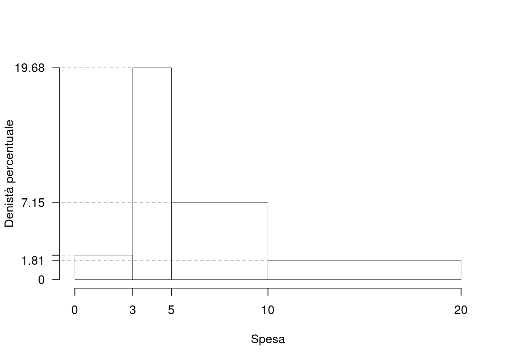
1.b (Punti 3/101 \(\rightarrow\) 0.92/31) Quante famiglie hanno una spesa superiore al 75-esimo percentile?
\[\%(X>x_{0.75})=25\% , \rightarrow 250\times 0.25=62.5 \]
1.c (Punti 2/101 \(\rightarrow\) 0.61/31) Che relazione dobbiamo aspettarci tra media e mediana?
\[ \bar x > x_{0.5} \]
1.d (Punti 2/101 \(\rightarrow\) 0.61/31) La spesa media è pari a \(\bar x=7.1245\), mentre la SD è pari a \(SD=4.7792\). Se ogni famiglia aumentasse la spesa di 0.5, quanto varrebbero la media e la SD dei dati?
Invariata
Esercizio 2
Siano \(X\sim N(102,1.5)\) e sia \(Y\sim N(50,3.5)\), \(X\) e \(Y\) indipendenti. Posto \(A=\{X>100\}\), \(B=\{X<102\}\), e \(C=\{47<Y\le 53\}\).
2.a (Punti 14/101 \(\rightarrow\) 4.3/31) Quanto vale \(P\Big((A\cap B)\cup C\Big)\)?
\[\begin{eqnarray*} P( 100 < X \leq 102 ) &=& P\left( \frac { 100 - 102 }{\sqrt{ 1.5 }} < \frac { X - \mu_X }{ \sigma_X } \leq \frac { 102 - 102 }{\sqrt{ 1.5 }}\right) \\ &=& P\left( -1.63 < Z \leq 0 \right) \\ &=& \Phi( 0 )-\Phi( -1.63 )\\ &=& \Phi( 0 )-(1-\Phi( 1.63 )) \\ &=& 0.5 -(1- 0.9484 ) \\ &=& 0.4484 \end{eqnarray*}\]
\[\begin{eqnarray*} P( 47 < Y \leq 53 ) &=& P\left( \frac { 47 - 50 }{\sqrt{ 3.5 }} < \frac { Y - \mu_Y }{ \sigma_Y } \leq \frac { 53 - 50 }{\sqrt{ 3.5 }}\right) \\ &=& P\left( -1.6 < Z \leq 1.6 \right) \\ &=& \Phi( 1.6 )-\Phi( -1.6 )\\ &=& \Phi( 1.6 )-(1-\Phi( 1.6 )) \\ &=& 0.9452 -(1- 0.9452 ) \\ &=& 0.8904 \end{eqnarray*}\]
\[\begin{eqnarray*} P(A\cap B\cup C) &=& P(A\cap B)+P(C)-P(A\cap B\cap C)\\ &=& P(A\cap B)+P(C)-P(A\cap B)P(C)\\ &=& 0.4488+0.8912-0.4488\times0.8912\\ &=& 0.94 \end{eqnarray*}\]
2.b (Punti 3/101 \(\rightarrow\) 0.92/31) Si estrae 5 volte da \(X\sim N(102,1.5)\), posto \(A=\{X>100\}\), quale è la probabilità che \(A\) si avveri 3 volte su 5?
\[ \pi=P(A)=0.9088 \]
\[ P(3\text{ su }5)=\binom{5}{3}0.9088^3(1-0.9088)^5=0.0624 \]
2.c (Punti 2/101 \(\rightarrow\) 0.61/31) Se \(F\) è la funzione di ripartizione della VA \(X\), posto \(a < b\) due numeri qualunque, a cosa equivale \[ F(b)-F(a) \qquad? \]
\[ F(b)-F(a) = P(a<X\le b) \]
Esercizio 3
3.a (Punti 14/101 \(\rightarrow\) 4.3/31) Ogni giorno un impianto di produzione confeziona 1000 lotti. In media il 10 di questi lotti sono fallati, con una deviazione standard pari a 0.3. Dopo 300 giorni di produzione qual è la probabilità che il numero di lotti fallati sia maggiore di 3100?
\(E(X_i)=10\), \(V(X_i)=0.09\) e quindi
Teorema del Limite Centrale (somma VC qualunque)
Siano \(X_1\),…,\(X_n\), \(n=300\) VC IID, tc \(E(X_i)=\mu=10\) e \(V(X_i)=\sigma^2=0.09,\forall i\), posto: \[ S_n = X_1 + ... + X_n \] allora:\[\begin{eqnarray*} S_n & \mathop{\sim}\limits_{a}& N(n\mu,n\sigma^2) \\ &\sim & N(300\cdot10,300\cdot0.09) \\ &\sim & N(3000,27) \end{eqnarray*}\]\[\begin{eqnarray*} P( S_n > 3100 ) &=& P\left( \frac { S_n - n\mu }{ \sqrt{n\sigma^2} } > \frac { 3100 - 3000 }{\sqrt{ 27 }} \right) \\ &=& P\left( Z > 19.25 \right) \\ &=& 1-P(Z< 19.25 )\\ &=& 1-\Phi( 19.25 ) \\ &=& 0 \end{eqnarray*}\]
Esercizio 4
4.a (Punti 3/101 \(\rightarrow\) 0.92/31) Sia \(\hat \lambda\) lo stimatore di massima verosimiglianza di \(\lambda\) del modello di Poisson. \[\begin{eqnarray*} \hat\lambda &=& \frac 1n\sum_{i=1}^nx_i\\ \end{eqnarray*}\] Dimostrare le correttezza di \(\hat\lambda\) in almeno tre passaggi.
4.b (Punti 3/101 \(\rightarrow\) 0.92/31) Definire lo Standard Error di uno stimatore.
4.c (Punti 3/101 \(\rightarrow\) 0.92/31) Definire gli errori di primo e di secondo tipo di un test statistico.
4.d (Punti 3/101 \(\rightarrow\) 0.92/31) In un test statistico, per quali valori di \(p_\text{value}\) si tende a rifiutare \(H_0\)?
Esercizio 5
5.a (Punti 14/101 \(\rightarrow\) 4.3/31) Il Supermercato \(S\), della catena \(C\), ha monitorato gli accessi al suo interno per una settimana. Qui di seguito il numero di accessi per giorno della settimana di \(S\) e la percentuale di accessi nella catena \(C\).
| Lun | Mart | Merc | Giov | Ven | Totale | |
|---|---|---|---|---|---|---|
| Supermercato S | \(59\) | \(20\) | \(30\) | \(24\) | \(117\) | \(250\) |
| Catena C | \(25\%\) | \(10\%\) | \(10\%\) | \(10\%\) | \(45\%\) | \(100\%\) |
Testare l’ipotesi che nel supermercato \(S\) la distribuzione degli accessi nei giorni della settimana sia uguale a quella della catena.
Test \(\chi^2\) per conformità
\(\fbox{A}\) Formulazione delle ipotesi \[ \{H_0:\pi_\text{ Supermercato S }= \pi_\text{ Catena C },~~\forall j \] \(\fbox{B}\) Scelta e calcolo della statistica test.
Si tratta di un test chi quadro di conformità. \[ n^*_j = n\cdot \pi^*_{\text{ Catena C },j} \]
La tabella delle distanze:
| Lun | Mart | Merc | Giov | Ven | Tot | |
|---|---|---|---|---|---|---|
| Supermercato S | 59.000 | 20.0 | 30.0 | 24.00 | 117.00 | 250.000 |
| Catena C | 0.250 | 0.1 | 0.1 | 0.10 | 0.45 | 1.000 |
| \(n_j^*\) | 62.500 | 25.0 | 25.0 | 25.00 | 112.50 | 250.000 |
| \(\chi^2\) | 0.196 | 1.0 | 1.0 | 0.04 | 0.18 | 2.416 |
\[ \chi^2_{obs}= 2.416 \]
i \(gdl\)
\[ ( 5 -1)= 4 \]
\(\fbox{C}\) CONCLUSIONE
I valori critici sono
\(\chi^2_{4;0.1}=7.7794\); \(\chi^2_{4;0.05}=9.4877\); \(\chi^2_{4;0.01}=13.2767\); \(\chi^2_{4;0.001}=18.4668\)
Siccome
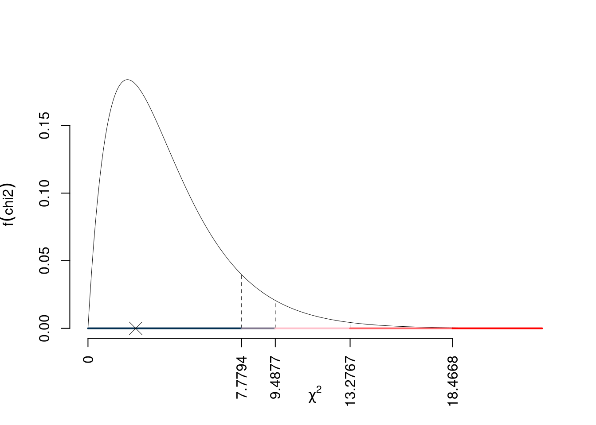
Il \(p_{\text{value}}\) è
\[ p_{\text{value}} = P(\chi^2_{4}>2.42)=0.659015987540051 \]
Attenzione il calcolo del \(p_\text{value}\) con la distribuzione \(\chi^2\) è puramente illustrativo e non può essere riprodotto senza una calcolatrice statistica adeguata.\[ 0.1 \leq p_\text{value}= 0.659 < 1 \]
Esercizio 6
In uno studio sul potere d’acquisto delle famiglie è stato selezionato un campione di 150 nuclei familiari a cui è stato chiesto il reddito (\(X\)) e la percezione della perdita del potere d’acquisto espresso su una scala che va da zero a 1 (\(Y\)). Qui di seguito le statistiche bivariate
\[\begin{align*} \sum_{i=1}^n x_i &= 110.55, &\sum_{i=1}^n x_i^2 &= 127.03 \\ \sum_{i=1}^n y_i &= 112.68, &\sum_{i=1}^n y_i^2 &= 86.61 \\ \sum_{i=1}^n x_iy_i &= 74.32. \end{align*}\]
6.a (Punti 14/101 \(\rightarrow\) 4.3/31) Stimare la previsione per \(x=1.5\) nel modello di regressione dove \(Y\) viene spiegata da \(X\).
\[\begin{eqnarray*} \bar x &=&\frac 1 n\sum_{i=1}^n x_i = \frac {1}{ 150 } 110.55 = 0.737 \\ \bar y &=&\frac 1 n\sum_{i=1}^n y_i = \frac {1}{ 150 } 112.68 = 0.7512 \\ \hat\sigma_X^2&=&\frac 1 n\sum_{i=1}^n x_i^2-\bar x^2=\frac {1}{ 150 } 127 - 0.737 ^2= 0.3037 \\ \hat\sigma_Y^2&=&\frac 1 n\sum_{i=1}^n y_i^2-\bar y^2=\frac {1}{ 150 } 86.61 - 0.7512 ^2= 0.0131 \\ \text{cov}(X,Y)&=&\frac 1 n\sum_{i=1}^n x_i~y_i-\bar x\bar y=\frac {1}{ 150 } 74.32 - 0.737 \cdot 0.7512 = -0.05817 \\ \hat\beta_1 &=& \frac{\text{cov}(X,Y)}{\hat\sigma_X^2} \\ &=& \frac{ -0.05817 }{ 0.3037 } = -0.1915 \\ \hat\beta_0 &=& \bar y - \hat\beta_1 \bar x\\ &=& 0.7512 - (-0.1915) \times 0.737 = 0.8924 \end{eqnarray*}\]\[\hat y_{X= 1.5 }=\hat\beta_0+\hat\beta_1 x= 0.8924 + (-0.1915) \times 1.5 = 0.6051 \]
6.b (Punti 3/101 \(\rightarrow\) 0.92/31) Qual è la percentuale di varianza spiegata dal modello?
\[\begin{eqnarray*} r&=&\frac{\text{cov}(X,Y)}{\sigma_X\sigma_Y}=\frac{ -0.05817 }{ 0.5511 \times 0.1144 }= -0.9223 \\r^2&=& 0.8506 > 0.75 \end{eqnarray*}\] Il modello si adatta bene ai dati.
6.c (Punti 2/101 \(\rightarrow\) 0.61/31) Interpretare i parametri di regressione \(\hat\beta_0\) e \(\hat\beta_1\).
6.d (Punti 2/101 \(\rightarrow\) 0.61/31) Se \(W=-10\times Y\), quanto varrà \(r_{XW}\), coefficiente di correlazione tra \(X\) e \(W\)?
\[r_{WX}=-r_{XY}=0.9223\]
Prova di Statistica 2022/06/16-2
Esercizio 1
Su un campione di \(250\) famiglie della provincia di Ferrara è stato rilevata la spesa in generi alimentari (espresso in migliaia di euro). Qui di seguito i dati raccolti in classe e le densità di frequenza percentuali
| \([\text{x}_j,\) | \(\text{x}_{j+1})\) | \(h_j\) |
|---|---|---|
| 0 | 3 | 2.40 |
| 3 | 5 | 19.60 |
| 5 | 10 | 7.12 |
| 10 | 20 | 1.80 |
1.a (Punti 14/101 \(\rightarrow\) 4.3/31) Calcolare il valore approssimato della mediana.
| \([\text{x}_j,\) | \(\text{x}_{j+1})\) | \(f_{j\%}\) | \(n_j\) | \(f_j\) | \(b_j\) | \(h_j\) | \(F_j\) |
|---|---|---|---|---|---|---|---|
| 0 | 3 | 7.2 | 18 | 0.072 | 3 | 2.40 | 0.072 |
| 3 | 5 | 39.2 | 98 | 0.392 | 2 | 19.60 | 0.464 |
| 5 | 10 | 35.6 | 89 | 0.356 | 5 | 7.12 | 0.820 |
| 10 | 20 | 18.0 | 45 | 0.180 | 10 | 1.80 | 1.000 |
| 100.0 | 250 | 1.000 | 20 |
\[\begin{eqnarray*} p &=& 0.5 , \text{essendo }F_{ 3 }= 0.82 > 0.5 \Rightarrow j_{ 0.5 }= 3 \\ x_{ 0.5 } &=& x_{\text{inf}; 3 } + \frac{ { 0.5 } - F_{ 2 }} {f_{ 3 }} \cdot b_{ 3 } \\ &=& 5 + \frac {{ 0.5 } - 0.464 } { 0.356 } \cdot 5 \\ &=& 5.506 \end{eqnarray*}\]
1.b (Punti 3/101 \(\rightarrow\) 0.92/31) Quante famiglie hanno una spesa inferiore al 25-esimo percentile?
\[ 250\times 0.25=62.5 \]
1.c (Punti 2/101 \(\rightarrow\) 0.61/31) La spesa media è pari a \(\bar x=6.9973\), che forma ci dobbiamo aspettare dell’istogramma di densità?
1.d (Punti 2/101 \(\rightarrow\) 0.61/31) La varianza della spesa è pari a \(Var=18.3466\). Se ogni famiglia aumentasse la sua spesa del 5%, quanto varrebbe varianza dei dati così trasformati?
\[20.2272\]
Esercizio 2
Siano \(X\sim \text{Pois}(1.5)\) e sia \(Y\sim \text{Pois}(1.5)\), \(X\) e \(Y\) indipendenti. Posto \(A=\{X<2\}\) e \(B=\{Y\ge 2\}\)
2.a (Punti 14/101 \(\rightarrow\) 4.3/31) Quanto vale \(P(A\cup B)\)?
\[\begin{eqnarray*} P(A) &=& P(X=0)+P(X=1)\\ &=& \frac{1.5^0}{0!}e^{-1.5}+\frac{1.5^1}{1!}e^{-1.5}\\ &=& 0.5578\\ P(B) &=& 1-P(A)\\ &=&0.4422\\ P(A\cup B) &=& P(A)+P(B)-P(A\cap B)\\ &=& 0.7533 \end{eqnarray*}\]
2.b (Punti 3/101 \(\rightarrow\) 0.92/31) Si estrae 6 volte da \(X\sim \text{Pois}(1.5)\), posto \(A=\{X<2\}\), quale è la probabilità che \(A\) si avveri 3 volte su 6?
\[\begin{eqnarray*} P(A) &=& P(X=0)+P(X=1)\\ &=& \frac{1.5^0}{0!}e^{-1.5}+\frac{1.5^1}{1!}e^{-1.5}\\ &=& 0.2231+0.3347\\ &=& 0.5578\\ P(\text{3 successi su 6}) &=& \binom{6}{3}0.5578^3(1-0.5578)^{6-3}\\ &=&0.3001 \end{eqnarray*}\]
2.c (Punti 2/101 \(\rightarrow\) 0.61/31) Se \(X\) è una VC con valore atteso \(E(X)=0.5\) e \(V(X)=1.2\), posto \(Y=X^2\) è vero che \(E(Y)=E^2(X)\)?
Esercizio 3
3.a (Punti 14/101 \(\rightarrow\) 4.3/31) Si lancia un dado perfetto 100 volte. Qual è la probabilità che la proporzione di volte che si osserva la faccia sei (⚅) sia maggiore di 0.2?
Soluzione
\(E(X_i)=0.1667\), \(V(X_i)=0.1389\) e quindi Teorema del Limite Centrale (proporzione)
Siano \(X_1\),…,\(X_n\), \(n=100\) VC IID, tc \(X_i\sim\text{Ber}(\pi=0.1667)\)\(,\forall i\), posto: \[ \hat\pi=\frac{S_n}n = \frac{X_1 + ... + X_n}n \] allora:\[\begin{eqnarray*} \hat\pi & \mathop{\sim}\limits_{a}& N(\pi,\pi(1-\pi)/n) \\ &\sim & N\left(0.1667,\frac{0.1667\cdot(1-0.1667)}{100}\right) \\ &\sim & N(0.1667,0.001389) \end{eqnarray*}\]\[\begin{eqnarray*} P( \hat\pi > 0.2 ) &=& P\left( \frac { \hat\pi - \pi }{ \sqrt{\pi(1-\pi)/n} } > \frac { 0.2 - 0.1667 }{\sqrt{ 0.001389 }} \right) \\ &=& P\left( Z > 0.89 \right) \\ &=& 1-P(Z< 0.89 )\\ &=& 1-\Phi( 0.89 ) \\ &=& 0.1867 \end{eqnarray*}\]
Esercizio 4
4.a (Punti 3/101 \(\rightarrow\) 0.92/31) Sia \(\hat \mu\) lo stimatore di massima verosimiglianza di \(\mu\) del modello Normale. \[\begin{eqnarray*} \hat\mu &=& \frac 1n\sum_{i=1}^nx_i\\ \end{eqnarray*}\] Dimostrare le consistenza di \(\hat\mu\) in almeno tre passaggi.
4.b (Punti 3/101 \(\rightarrow\) 0.92/31) Siano \(h_1\) e \(h_2\) due stimatori per \(\theta\), cosa significa dire che \(h_1\) è più efficiente di \(h_2\)?
4.c (Punti 3/101 \(\rightarrow\) 0.92/31) Definire la significatività e la potenza di un test statistico.
4.d (Punti 3/101 \(\rightarrow\) 0.92/31) Se in un test statistico il \(p_\text{value}>0.1\) possiamo rifiutare \(H_0\)?
Esercizio 5
5.a (Punti 14/101 \(\rightarrow\) 4.3/31) In un’indagine sull’opinione sul reddito di cittadinanza sono stati intervistate 140 persone che vivono al nord e 170 che vivono al sud: 60 su 140 che vivono al nord sono favorevoli al reddito di cittadinanza mentre 95 su 170 che vivono al sud sono favorevoli.
Testare, usando il p-value, che la proporzione di persone favorevoli al reddito di cittadinanza che vivono al sud sia uguale a quelle di quelli che vivono al nord, contro l’alternativa che siano diverse.
Test \(Z\) per due proporzioni
\(\fbox{A}\) FORMULAZIONE DELLE IPOTESI
\[\begin{cases} H_0: \pi_\text{N} = \pi_\text{S} \\ H_1: \pi_\text{N} \neq \pi_\text{S} \end{cases}\]
\(\fbox{B}\) SCELTA E CALCOLO STATISTICA-TEST, \(Z\)
\[\hat\pi_\text{ N }=\frac{s_\text{ N }}{n_\text{ N }}=\frac{ 60 }{ 140 }= 0.4286 \qquad \hat\pi_\text{ S }=\frac{s_\text{ S }}{n_\text{ S }}=\frac{ 95 }{ 170 }= 0.5588 \]Calcoliamo la proporzione comune sotto \(H_0\) \[ \pi_C=\frac{s_\text{ N }+s_\text{ S }}{n_\text{ N }+n_\text{ S }}= \frac{ 155 }{ 310 }= 0.5 \]\[\begin{eqnarray*} \frac{\hat\pi_\text{ N } - \hat\pi_\text{ S }} {\sqrt{\frac {\pi_C(1-\pi_C)}{n_\text{ N }}+\frac {\pi_C(1-\pi_C)}{n_\text{ S }}}}&\sim&N(0,1)\\ z_{\text{obs}} &=& \frac{ ( 0.4286 - 0.5588 )} {\sqrt{\frac{ 0.5 (1- 0.5 )}{ 140 }+\frac{ 0.5 (1- 0.5 )}{ 170 }}} = -2.283 \, . \end{eqnarray*}\]
\(\fbox{C}\) CONCLUSIONE
Il \(p_{\text{value}}\) è
\[ p_{\text{value}} = P(|Z|>|-2.28|)=2P(Z>2.28)=0.022456 \]
\[ 0.01 < p_\text{value}= 0.022456 \leq 0.05 \]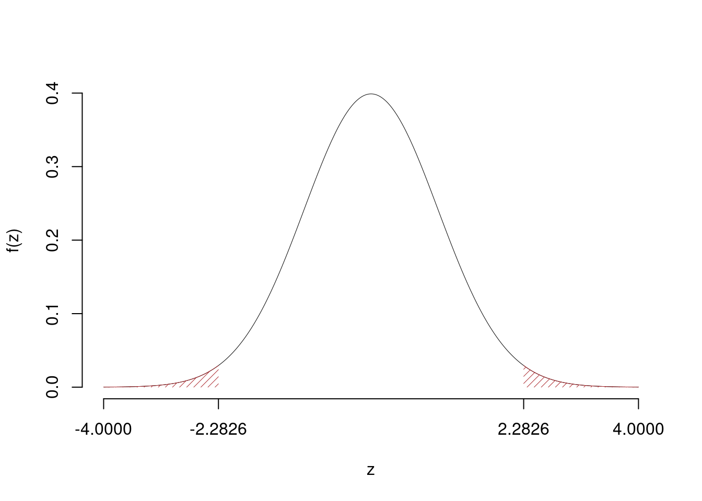
Rifiuto \(H_0\) al 5%,
\(0.01<p_\text{value}<0.05\), significativo \(\fbox{*}\).
Esercizio 6
In uno studio sul potere d’acquisto delle famiglie è stato selezionato un campione di 150 nuclei familiari a cui è stato chiesto il reddito (\(X\)) e la percezione della perdita del potere d’acquisto espresso su una scala che va da zero a 1. Qui di seguito le statistiche bivariate
\[\begin{align*} \sum_{i=1}^n x_i &= 122.7104 &\sum_{i=1}^n x_i^2 &= 157.1627 &\sum_{i=1}^n x_i y_i &= 78.8935\\ \sum_{i=1}^n y_i &= 110.4191 & \sum_{i=1}^n y_i^2 &= 83.8076 & \end{align*}\]
6.a (Punti 14/101 \(\rightarrow\) 4.3/31) Stimare la previsione per \(x=1.0\) nel modello di regressione dove \(Y\) viene spiegata da \(X\).
\[\begin{eqnarray*} \bar x &=&\frac 1 n\sum_{i=1}^n x_i = \frac {1}{ 150 } 122.7102 = 0.8181 \\ \bar y &=&\frac 1 n\sum_{i=1}^n y_i = \frac {1}{ 150 } 110.4192 = 0.7361 \\ \hat\sigma_X^2&=&\frac 1 n\sum_{i=1}^n x_i^2-\bar x^2=\frac {1}{ 150 } 157.2 - 0.8181 ^2= 0.3785 \\ \hat\sigma_Y^2&=&\frac 1 n\sum_{i=1}^n y_i^2-\bar y^2=\frac {1}{ 150 } 83.81 - 0.7361 ^2= 0.01683 \\ \text{cov}(X,Y)&=&\frac 1 n\sum_{i=1}^n x_i~y_i-\bar x\bar y=\frac {1}{ 150 } 78.89 - 0.8181 \cdot 0.7361 = -0.07624 \\ \hat\beta_1 &=& \frac{\text{cov}(X,Y)}{\hat\sigma_X^2} \\ &=& \frac{ -0.07624 }{ 0.3785 } = -0.2014 \\ \hat\beta_0 &=& \bar y - \hat\beta_1 \bar x\\ &=& 0.7361 - (-0.2014) \times 0.8181 = 0.9009 \end{eqnarray*}\]\[\hat y_{X= 1 }=\hat\beta_0+\hat\beta_1 x= 0.9009 + (-0.2014) \times 1 = 0.6995 \]
6.b (Punti 3/101 \(\rightarrow\) 0.92/31) Il modello si adatta bene ai dati?
\[\begin{eqnarray*} r&=&\frac{\text{cov}(X,Y)}{\sigma_X\sigma_Y}=\frac{ -0.07624 }{ 0.6152 \times 0.1297 }= -0.9552 \\r^2&=& 0.9124 > 0.75 \end{eqnarray*}\] Il modello si adatta bene ai dati.
6.c (Punti 2/101 \(\rightarrow\) 0.61/31) Cosa sono i punti di leva e cosa gli outliers?
6.d (Punti 2/101 \(\rightarrow\) 0.61/31) Se \(W=10\times Y\), posto \[w_i=\beta_0'+\beta_1'x_ì +\epsilon_i'\] il modello in cui \(W\) viene spiegata da \(X\), quanto varranno \(\beta_0'\) e \(\beta_1'\)?
\[\begin{eqnarray*} \bar w &=& 10\times \bar y\\ &=& 7.3613\\ \sum x_iw_i&=&\sum x_i\cdot 10\cdot y_i\\ &=& 10\sum x_i y_i\\ &=& 788.9347\\ cov(x,w)&=&\sum x_iw_i-\bar w\cdot\bar x\\ &=&10\sum x_i y_i - 10 \cdot\bar y\cdot\bar x\\ &=&10 cov(x,y)\\ &=& -0.7625\\ \hat\beta'_1&=&\frac{10\cdot cov(x,y)}{\hat\sigma_X^2}\\ &=&-2.0143\\ \hat\beta_0'&=& \bar w -\hat\beta'_1\bar x\\ &=&10\bar y - 10 \hat \beta_1\bar x\\ &=&9.0091 \end{eqnarray*}\]
Prova di Statistica 2022/06/16-3
Esercizio 1
Su un campione di \(250\) famiglie della provincia di Ferrara è stato rilevata la spesa in generi alimentari (espresso in migliaia di euro). Qui di seguito i dati raccolti in classe e le frequenze assolute
| \([\text{x}_j,\) | \(\text{x}_{j+1})\) | \(n_j\) |
|---|---|---|
| 0 | 3 | 18 |
| 3 | 5 | 98 |
| 5 | 10 | 89 |
| 10 | 20 | 45 |
| 250 |
1.a (Punti 14/101 \(\rightarrow\) 4.3/31) Individuare la classe modale.
| \([\text{x}_j,\) | \(\text{x}_{j+1})\) | \(f_{j\%}\) | \(n_j\) | \(f_j\) | \(b_j\) | \(h_j\) | \(F_j\) |
|---|---|---|---|---|---|---|---|
| 0 | 3 | 7.2 | 18 | 0.072 | 3 | 2.40 | 0.072 |
| 3 | 5 | 39.2 | 98 | 0.392 | 2 | 19.60 | 0.464 |
| 5 | 10 | 35.6 | 89 | 0.356 | 5 | 7.12 | 0.820 |
| 10 | 20 | 18.0 | 45 | 0.180 | 10 | 1.80 | 1.000 |
| 100.0 | 250 | 1.000 | 20 |
1.b (Punti 3/101 \(\rightarrow\) 0.92/31) Qual è la percentuale di famiglie con spesa superiore al 25-esimo percentile?
\[n\cdot 0.75=187.5\]
1.c (Punti 2/101 \(\rightarrow\) 0.61/31) La spesa media è pari a \(\bar x=7.143\), che forma ci dobbiamo aspettare dell’istogramma di densità?
1.d (Punti 2/101 \(\rightarrow\) 0.61/31) La varianza della spesa è pari a \(Var=19.055\). Se ogni famiglia aumentasse la sua spesa del 10%, quanto varrebbe standard deviation dei dati così trasformati?
\[\sigma_{new}=\sqrt{1.1^2\times \sigma^2}=4.5783\]
Esercizio 2
Siano \(X\sim \text{Binom}(5,0.4)\) e sia \(Y\sim \text{Binom}(2,0.4)\), \(X\) e \(Y\) indipendenti. Posto \(W=X+Y\)
2.a (Punti 14/101 \(\rightarrow\) 4.3/31) Calcolare \(P(W< 2)\).
\[\begin{eqnarray*} W &\sim& \text{Binom}(2+5,0.4)\\ P(W<2) &=& P(W=0)+P(W=1)\\ &=& \binom{7}{0}0.4^00.6^7+\binom{7}{1}0.4^10.6^6\\ &=& 0.028+0.1306\\ &=&0.1586 \end{eqnarray*}\]
2.b (Punti 3/101 \(\rightarrow\) 0.92/31) Posto \(V=2+5\cdot W\), ricavare valore atteso e varianza di \(V\).
\[\begin{eqnarray*} E(V) &=& 2+5E(X) \\ &=& 2+5\times 7 \times 0.4\\ &=& 16\\ V(V) &=& 5^2V(X) \\ &=& 25\times 7\times 0.4\times (1-.04)\\ &=& 42\\ \end{eqnarray*}\]
2.c (Punti 2/101 \(\rightarrow\) 0.61/31) Se \(A\) e \(B\) sono due eventi diversi dal vuoto, è possibile che \(P(A)+P(B)>1\)?
Esercizio 3
3.a (Punti 14/101 \(\rightarrow\) 4.3/31) Un’urna contiene 3 palline bianche, 2 nere e 5 blu. Si estrae 200 volte con reimmissione. Calcolare la probabilità che il numero di palline nere sia maggiore di 50.
\(E(X_i)=0.2\), \(V(X_i)=0.16\) e quindi
Teorema del Limite Centrale (somma di Bernoulli)
Siano \(X_1\),…,\(X_n\), \(n=200\) VC IID, tc \(X_i\sim\text{Ber}(\pi=0.2)\)\(,\forall i\), posto: \[ S_n = X_1 + ... + X_n \] allora:\[\begin{eqnarray*} S_n & \mathop{\sim}\limits_{a}& N(n\pi,n\pi(1-\pi)) \\ &\sim & N(200\cdot0.2,200\cdot0.2\cdot(1-0.2)) \\ &\sim & N(40,32) \end{eqnarray*}\]\[\begin{eqnarray*} P( S_n > 50 ) &=& P\left( \frac { S_n - n\pi }{ \sqrt{n\pi(1-\pi)} } > \frac { 50 - 40 }{\sqrt{ 32 }} \right) \\ &=& P\left( Z > 1.77 \right) \\ &=& 1-P(Z< 1.77 )\\ &=& 1-\Phi( 1.77 ) \\ &=& 0.0384 \end{eqnarray*}\]
Esercizio 4
4.a (Punti 3/101 \(\rightarrow\) 0.92/31) Sia \(\hat \lambda\) lo stimatore di massima verosimiglianza di \(\lambda\) del modello Poisson. \[\begin{eqnarray*} \hat\lambda &=& \frac 1n\sum_{i=1}^nx_i\\ \end{eqnarray*}\] Dimostrare le consistenza di \(\hat\lambda\) in almeno tre passaggi.
4.b (Punti 3/101 \(\rightarrow\) 0.92/31) Siano \(h\) uno stimatore per \(\theta\), cosa significa dire che \(h\) è asintoticamente corretto?
4.c (Punti 3/101 \(\rightarrow\) 0.92/31) Definire la probabilità di significatività.
4.d (Punti 3/101 \(\rightarrow\) 0.92/31) Se in un test statistico \(0.01 < p_\text{value} <0.05\) cosa possiamo concludere?
Esercizio 5
5.a (Punti 14/101 \(\rightarrow\) 4.3/31) In un’indagine sull’opinione sul reddito sono stati rilevati i redditi di 140 persone che vivono al nord e quelli di 170 che vivono al sud: il reddito medio di chi vive al nord è di 32.2 mila euro annui con una SD pari a 2.4 mila euro annui, mentre il reddito medio di chi vive al sud è di 27.5 con una SD pari a 1.7.
Sotto ipotesi di eterogeneità testare l’ipotesi che il reddito medio sia uguale al nord come al sud, contro l’alternativa che sia diverso.
Test \(t\) per due medie, (eterogeneità)
\(\fbox{A}\) FORMULAZIONE DELLE IPOTESI
\[\begin{cases} H_0: \mu_\text{A} = \mu_\text{B} \\ H_1: \mu_\text{A} \neq \mu_\text{B} \end{cases}\]
\(\fbox{B}\) SCELTA E CALCOLO STATISTICA-TEST, \(T\) \[ S^2_\text{ N }=\frac{n_\text{ N }}{n_\text{ N }-1}\hat\sigma^2_\text{ N }=\frac{ 140 }{ 140 -1} 2.4 ^2= 5.801 \qquad S^2_\text{ S }=\frac{n_\text{ S }}{n_\text{ S }-1}\hat\sigma^2_\text{ S }=\frac{ 170 }{ 170 -1} 1.7 ^2= 2.907 \]
\[\begin{eqnarray*} \frac{\hat\mu_\text{ N } - \hat\mu_\text{ S }} {\sqrt{\frac {S^2_\text{ N }}{n_\text{ N }}+\frac {S^2_\text{ S }}{n_\text{ S }}}}&\sim&t_{n_\text{ N }+n_\text{ S }-2}\\ t_{\text{obs}} &=& \frac{ ( 32.2 - 27.5 )} {\sqrt{\frac{ 5.801 }{ 140 }+\frac{ 2.907 }{ 170 }}} = 19.43 \, . \end{eqnarray*}\]
\(\fbox{C}\) CONCLUSIONE
Siccome \(H_1\) è bilaterale, considereremo \(\alpha/2\), anziché \(\alpha\)
\(\alpha=0.1, 0.05, 0.01, 0.001\) e quindi \(\alpha/2=0.05, 0.025, 0.005, 0.0005\)
I valori critici sono
\(t_{310-2;0.05}=1.6498\); \(t_{310-2;0.025}=1.9677\); \(t_{310-2;0.005}=2.5919\); \(t_{310-2;0.0005}=3.3224\)
Siccome \(|t_\text{obs}|=19.4256>3.3224\), quindi rifiuto \(H_0\) sotto all’1‰,
\(p_\text{value}<0.001\), estremamente significativo \(\fbox{***}\).
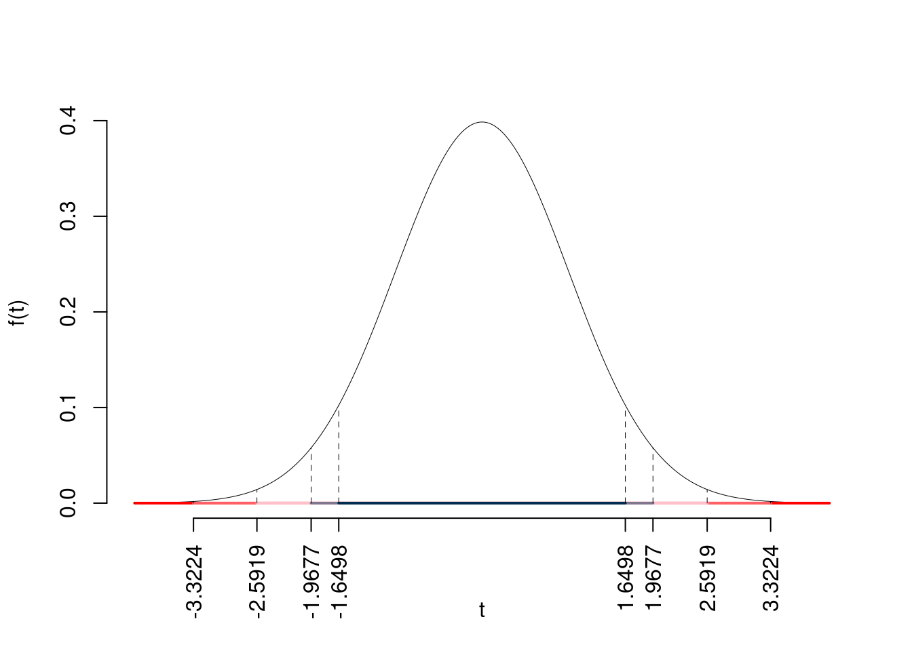
Il \(p_{\text{value}}\) è
\[ p_{\text{value}} = P(|T_{310-2}|>|19.43|)=2P(T_{310-2}>19.43)=0e+00 \]
Attenzione il calcolo del \(p_\text{value}\) con la \(T\) è puramente illustrativo e non può essere riprodotto senza una calcolatrice statistica adeguata.\[ 0 < p_\text{value}= 0e+00 \leq 0.001 \]
Esercizio 6
In uno studio sul potere d’acquisto delle famiglie è stato selezionato un campione di 150 nuclei familiari a cui è stato chiesto il reddito (\(X\)) e la percezione della perdita del potere d’acquisto espresso su una scala che va da zero a 1. Qui di seguito le statistiche bivariate
\[\begin{align*} \sum_{i=1}^n x_i &= 109.6215 &\sum_{i=1}^n x_i^2 &= 134.2163 &\sum_{i=1}^n x_i y_i &= 71.3993\\ \sum_{i=1}^n y_i &= 112.7446 & \sum_{i=1}^n y_i^2 &= 87.1782 & \end{align*}\]
6.a (Punti 14/101 \(\rightarrow\) 4.3/31) Stimare la previsione per \(x=1.4\) nel modello di regressione dove \(Y\) viene spiegata da \(X\).
\[\begin{eqnarray*} \bar x &=&\frac 1 n\sum_{i=1}^n x_i = \frac {1}{ 150 } 109.6214 = 0.7308 \\ \bar y &=&\frac 1 n\sum_{i=1}^n y_i = \frac {1}{ 150 } 112.7445 = 0.7516 \\ \hat\sigma_X^2&=&\frac 1 n\sum_{i=1}^n x_i^2-\bar x^2=\frac {1}{ 150 } 134.2 - 0.7308 ^2= 0.3607 \\ \hat\sigma_Y^2&=&\frac 1 n\sum_{i=1}^n y_i^2-\bar y^2=\frac {1}{ 150 } 87.18 - 0.7516 ^2= 0.01624 \\ \text{cov}(X,Y)&=&\frac 1 n\sum_{i=1}^n x_i~y_i-\bar x\bar y=\frac {1}{ 150 } 71.4 - 0.7308 \cdot 0.7516 = -0.0733 \\ \hat\beta_1 &=& \frac{\text{cov}(X,Y)}{\hat\sigma_X^2} \\ &=& \frac{ -0.0733 }{ 0.3607 } = -0.2032 \\ \hat\beta_0 &=& \bar y - \hat\beta_1 \bar x\\ &=& 0.7516 - (-0.2032) \times 0.7308 = 0.9002 \end{eqnarray*}\]\[\hat y_{X= 1 }=\hat\beta_0+\hat\beta_1 x= 0.9002 + (-0.2032) \times 1 = 0.6969 \]
6.b (Punti 3/101 \(\rightarrow\) 0.92/31) Calcolare e discutere \(R^2\).
\[\begin{eqnarray*} r&=&\frac{\text{cov}(X,Y)}{\sigma_X\sigma_Y}=\frac{ -0.0733 }{ 0.6006 \times 0.1274 }= -0.9578 \\r^2&=& 0.9173 > 0.75 \end{eqnarray*}\] Il modello si adatta bene ai dati.
6.c (Punti 2/101 \(\rightarrow\) 0.61/31) Cos’è un punto influente?
6.d (Punti 2/101 \(\rightarrow\) 0.61/31) Se \(W=10+ Y\), posto \[w_i=\beta_0'+\beta_1'x_ì +\epsilon_i'\] il modello in cui \(W\) viene spiegata da \(X\), quanto varranno \(\beta_0'\) e \(\beta_1'\)?
\[\begin{eqnarray*} \bar w &=& 10+ \bar y\\ &=& 10.7516\\ \sum x_iw_i&=&\sum x_i\cdot (10+y_i)\\ &=& 10\sum x_i +\sum x_i y_i\\ &=& 10n\bar x +\sum x_i y_i\\ cov(x,w)&=&\frac 1n\sum x_iw_i-\bar w\cdot\bar x\\ &=&10\bar x +\frac 1n\sum x_i y_i-\bar x(10+\bar y)\\ &=&10 \bar x - 10 \bar x +cov(x,y) \\ &=& -0.0733\\ \hat\beta'_1&=&\hat\beta_1\\ &=&-0.2032\\ \hat\beta_0'&=& \bar w -\hat\beta'_1\bar x\\ &=& 10+\bar y-\hat\beta_1\bar x\\ &=&10+\hat\beta_0\\ &=&10.9002 \end{eqnarray*}\]
Prova di Statistica 2022/07/01-1
Esercizio 1
Su un campione di \(220\) imprese energivore della provincia di Bologna è stato rilevata la spesa in investimenti green, espressa in migliaia di euro. Qui di seguito i dati raccolti in classi e le frequenze percentuali.
| \([\text{x}_j,\) | \(\text{x}_{j+1})\) | \(f_{j\%}\) |
|---|---|---|
| 0 | 7 | 16.818 |
| 7 | 15 | 40.000 |
| 15 | 17 | 36.818 |
| 17 | 20 | 6.364 |
| 100.000 |
1.a (Punti 14/106 \(\rightarrow\) 4.09/31) Individuare la classe modale.
| \([\text{x}_j,\) | \(\text{x}_{j+1})\) | \(n_j\) | \(f_j\) | \(b_j\) | \(h_j\) | \(F_j\) |
|---|---|---|---|---|---|---|
| 0 | 7 | 37 | 0.1682 | 7 | 2.403 | 0.1682 |
| 7 | 15 | 88 | 0.4000 | 8 | 5.000 | 0.5682 |
| 15 | 17 | 81 | 0.3682 | 2 | 18.409 | 0.9364 |
| 17 | 20 | 14 | 0.0636 | 3 | 2.121 | 1.0000 |
| 220 | 1.0000 | 20 |
la classe modale è la classe \(3\) essendo la classe con densità \(h_{3}=18.4091\) maggiore.
1.b (Punti 3/106 \(\rightarrow\) 0.88/31) Quante imprese hanno una spesa compresa tra 15 mila euro e il 75-esimo percentile?
\[\begin{eqnarray*} F(15)&=&0.5682\\ F(x_{0.75})&=&.75\\ \%(15<X<x_{0.75})&=&0.1818\\ n(15<X<x_{0.75})&=&40 \end{eqnarray*}\]
1.c (Punti 2/106 \(\rightarrow\) 0.58/31) La spesa media è pari a \(\bar x=12.0227\) mila euro, considerato la classe modale ricavata al punto 1.a, quale relazione ci dobbiamo attendere tra media e mediana?
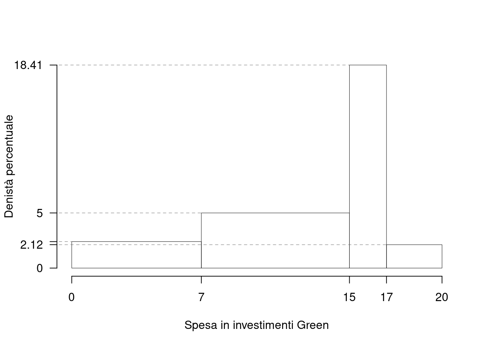
1.d (Punti 2/106 \(\rightarrow\) 0.58/31) La spesa media in investimenti green su 220 aziende modenesi è pari a \(\bar x=12.0227\) mila euro, mentre la spesa media in investimenti green della provincia di Reggio, su un campione di 150 aziende è pari a \(12.22\) mila euro. Calcolare la media globale delle \(220 + 150 = 370\) aziende delle due province.
\[\begin{eqnarray*} \bar x_T&=&\frac{220\times12.0227+150\times12.22}{220+150}\\ &=& 12.1027 \end{eqnarray*}\]
Esercizio 2
Siano \(X\sim N(10,1)\) e sia \(Y\sim N(10,1)\), \(X\) e \(Y\) indipendenti. Posto \(A=\{X>8\}\), \(B=\{X>11\}\), e \(C=\{9<Y\le 10\}\).
2.a (Punti 14/106 \(\rightarrow\) 4.09/31) Quanto vale \(P\Big((A\cup B)\cup C\Big)\)?
\[\begin{eqnarray*} P(A\cup B)&=&P(A) \end{eqnarray*}\]
\[\begin{eqnarray*} P( X > 8 ) &=& P\left( \frac { X - \mu_X }{ \sigma_X } > \frac { 8 - 10 }{\sqrt{ 1 }} \right) \\ &=& P\left( Z > -2 \right) \\ &=& 1-P(Z< -2 )\\ &=& 1-(1-\Phi( 2 )) \\ &=& 0.9772 \end{eqnarray*}\]\[\begin{eqnarray*} P( 9 < X \leq 10 ) &=& P\left( \frac { 9 - 10 }{\sqrt{ 1 }} < \frac { X - \mu }{ \sigma } \leq \frac { 10 - 10 }{\sqrt{ 1 }}\right) \\ &=& P\left( -1 < Z \leq 0 \right) \\ &=& \Phi( 0 )-\Phi( -1 )\\ &=& \Phi( 0 )-(1-\Phi( 1 )) \\ &=& 0.5 -(1- 0.8413 ) \\ &=& 0.3413 \end{eqnarray*}\]
\[\begin{eqnarray*} P(A\cup B\cup C)&=&P(A\cup C)\\ &=&P(A)+P(C)-P(A\cap C)\\ &=& 0.9772 +0.3413-0.9772\times 0.3413\\ &=& 0.985 \end{eqnarray*}\]
2.b (Punti 3/106 \(\rightarrow\) 0.88/31) Sia \(X\sim N(10,1)\), posto \(A=\{X>8\}\). Si estrae ripetutamente da \(X\) e si finisce quando \(A\) si avvera 2 volte. Calcolare la probabilità di finire dopo 6 estrazioni.
\[\begin{eqnarray*} P(A)&=&0.9772\\ P(\text{vincere alla sesta})&=&5\times0.9772\times (0.0228)^4\times 0.9772\\ &=& 0 \end{eqnarray*}\]
2.c (Punti 2/106 \(\rightarrow\) 0.58/31) Siano \(A\) e \(B\) due eventi diversi dal vuoto. È vero che se \(A\) e \(B\) sono non indipendenti, allora sono necessariamente incompatibili?
No, se sono incompatibili allora sono certamente non indipendenti, in quato \[ P(A\cap B)=P(\emptyset)=0\ne P(A)P(B) \] mentre se non sono indipendenti \[ P(A\cap B)\ne P(A)P(B) \]
2.d (Punti 2/106 \(\rightarrow\) 0.58/31) Se \(F\) è la funzione di ripartizione della VA \(X\), quali sono il valore massimo e quello minimo che \(F\) può assumere?
Esercizio 3
3.a (Punti 14/106 \(\rightarrow\) 4.09/31) Ogni giorno il centralino di un servizio di assistenza riceve in media 26.34 telefonate con una deviazione standard pari a 1.3 telefonate.
Dopo un anno (\(n=365\)), qual è la probabilità che il numero totale di telefonate sia compresa tra 9550 e 9600?
Teorema del Limite Centrale (somma VC qualunque)
Siano \(X_1\),…,\(X_n\), \(n=365\) VC IID, tc \(E(X_i)=\mu=26.34\) e \(V(X_i)=\sigma^2=1.69,\forall i\), posto: \[ S_n = X_1 + ... + X_n \] allora:\[\begin{eqnarray*} S_n & \mathop{\sim}\limits_{a}& N(n\mu,n\sigma^2) \\ &\sim & N(365\cdot26.34,365\cdot1.69) \\ &\sim & N(9614,616.9) \end{eqnarray*}\]\[\begin{eqnarray*} P( 9550 < S_n \leq 9600 ) &=& P\left( \frac { 9550 - 9614 }{\sqrt{ 616.9 }} < \frac { S_n - n\mu }{ \sqrt{n\sigma^2} } \leq \frac { 9600 - 9614 }{\sqrt{ 616.9 }}\right) \\ &=& P\left( -2.58 < Z \leq -0.57 \right) \\ &=& \Phi( -0.57 )-\Phi( -2.58 )\\ &=& (1-\Phi( 0.57 ))-(1-\Phi( 2.58 )) \\ &=& (1- 0.7157 )-(1- 0.9951 ) \\ &=& 0.2794 \end{eqnarray*}\]
Esercizio 4
4.a (Punti 3/106 \(\rightarrow\) 0.88/31) Sia \(\hat \lambda\) lo stimatore di massima verosimiglianza di \(\lambda\) del modello di Poisson: \(\hat\lambda = \frac 1n\sum_{i=1}^nx_i\) Scrivere lo Standard Error di \(\hat \lambda\).
4.b (Punti 3/106 \(\rightarrow\) 0.88/31) Se \(h\) è uno stimatore per \(\theta\) tale che \(E(h)\ne \theta\) e che \(\lim_ {n\to +\infty}E(h)=\theta\) di quale proprietà gode \(h\)?
4.c (Punti 3/106 \(\rightarrow\) 0.88/31) Definire gli errori di primo e di secondo tipo di un test statistico e le relative probabilità.
4.d (Punti 3/106 \(\rightarrow\) 0.88/31) In un confronto tra due campioni viene messo a test \[ \begin{cases} H_0:\sigma_A=\sigma_B\\ H_1:\sigma_A\ne \sigma_B \end{cases} \] Il \(p_\text{value}=0.265\). Alla luce di questo risultato, per testare la differenza tra le medie, cosa è preferibile, un test sotto ipotesi di omogeneità, oppure sotto ipotesi di eterogeneità?
Esercizio 5
Su un campione di \(n_M=34\) consumatori privati, scelti a caso tra i cittadini del comune di Mirandola, si è chiesto quanto spenderebbero mensilmente per poter usufruire di una connessione ultra veloce. Il campione ha restituito una media pari a 19.4 €/mese, con una deviazione standard pari a 2.2 €/mese,
5.a (Punti 3/106 \(\rightarrow\) 0.88/31) Costruire un Intervallo di Confidenza al 95% per la media di popolazione \(\mu\).
\(1-\alpha =0.95\) e quindi \(\alpha=0.05\rightarrow \alpha/2=0.025\)
\[ S =\sqrt{\frac {n}{n-1}}\cdot\hat\sigma = \sqrt{\frac { 34 }{ 33 }}\cdot 2.2 = 2.2331 \] \[\begin{eqnarray*} Idc: & & \hat\mu \pm t_{n-1;\alpha/2} \times \frac{S}{\sqrt{n}} \\ & & 19.4 \pm 2.035 \times \frac{ 2.2331 }{\sqrt{ 34 }} \\ & & 19.4 \pm 2.035 \times 0.383 \\ & & [ 18.62 , 20.18 ] \end{eqnarray*}\]
5.b (Punti 11/106 \(\rightarrow\) 3.22/31) La stessa domanda è stata posta ad un secondo campione di \(n_S=38\) consumatori privati,scelti a caso tra i cittadini del comune di Sassuolo. Il campione ha restituito una media pari a 20.2 €/mese, con una deviazione standard pari a 2.9 €/mese. Sotto ipotesi di omogeneità testare l’ipotesi che i due comuni abbiano uguale media, contro l’alternativa che sia diversa.
Test \(T\) per due medie, (omogeneità)
\(\fbox{A}\) FORMULAZIONE DELLE IPOTESI
\[\begin{cases} H_0: \mu_\text{1} = \mu_\text{2} \\ H_1: \mu_\text{1} \neq \mu_\text{2} \end{cases}\]
\(\fbox{B}\) SCELTA E CALCOLO STATISTICA-TEST, \(T\)
L’ipotesi è di omogeneità e quindi calcoliamo:\[ S_p^2=\frac{n_\text{ 1 }\hat\sigma^2_\text{ 1 }+n_\text{ 2 }\hat\sigma^2_\text{ 2 }}{n_\text{ 1 }+n_\text{ 2 }-2} = \frac{ 34 \cdot 2.2 ^2+ 38 \cdot 2.8 ^2}{ 34 + 38 -2}= 6.607 \]
\[\begin{eqnarray*} \frac{\hat\mu_\text{ 1 } - \hat\mu_\text{ 2 }} {\sqrt{\frac {S^2_p}{n_\text{ 1 }}+\frac {S^2_p}{n_\text{ 2 }}}}&\sim&t_{n_\text{ 1 }+n_\text{ 2 }-2}\\ t_{\text{obs}} &=& \frac{ ( 19.4 - 20.2 )} {\sqrt{\frac{ 4.987 }{ 34 }+\frac{ 8.052 }{ 38 }}} = -1.318 \, . \end{eqnarray*}\]
\(\fbox{C}\) CONCLUSIONE
Siccome \(H_1\) è bilaterale, considereremo \(\alpha/2\), anziché \(\alpha\)
\(\alpha=0.1, 0.05, 0.01, 0.001\) e quindi \(\alpha/2=0.05, 0.025, 0.005, 0.0005\)
I valori critici sono
\(t_{72-2;0.05}=1.6669\); \(t_{72-2;0.025}=1.9944\); \(t_{72-2;0.005}=2.6479\); \(t_{72-2;0.0005}=3.435\)
Siccome \(|t_\text{obs}|=1.3184<t_{72-2;0.05}=1.6669\), quindi non rifiuto \(H_0\) a nessun livello di significatività,
\(p_\text{value}>0.1\), non significativo
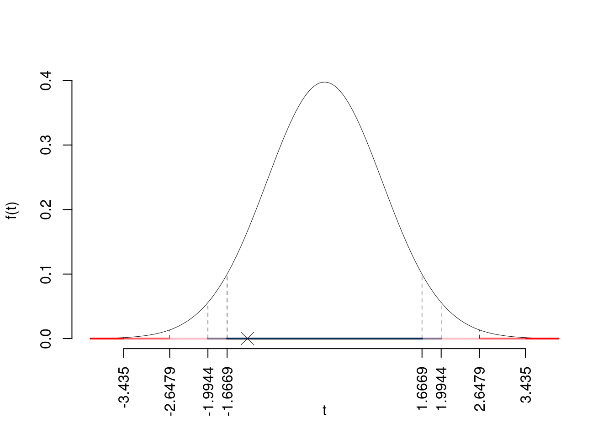
Il \(p_{\text{value}}\) è
\[ p_{\text{value}} = P(|T_{72-2}|>|-1.32|)=2P(T_{72-2}>1.32)=0.191657 \]
Attenzione il calcolo del \(p_\text{value}\) con la \(T\) è puramente illustrativo e non può essere riprodotto senza una calcolatrice statistica adeguata.\[ 0.1 < p_\text{value}= 0.191657 \leq 1 \]
Esercizio 6
Sono stati analizzati 5 comuni della provincia di Modena e su ogni comune è stato rilevato il numero di abitanti \(X\), espresso in migliaia di persone, e il numero di esercizi commerciali \(Y\).
Qui di seguito i dati
| 1 | 2 | 3 | 4 | 5 | |
|---|---|---|---|---|---|
| \(x_i\) | 12.20 | 12.40 | 13.50 | 18.40 | 19.80 |
| \(y_i\) | 6.72 | 6.33 | 9.34 | 8.52 | 14.15 |
6.a (Punti 14/106 \(\rightarrow\) 4.09/31) Calcolare il residuo del quarto dato nel modello di regressione dove \(Y\) viene spiegata da \(X\).
| \(i\) | \(x_i\) | \(y_i\) | \(x_i^2\) | \(y_i^2\) | \(x_i\cdot y_i\) |
|---|---|---|---|---|---|
| 1 | 12.20 | 6.720 | 148.8 | 45.18 | 82.00 |
| 2 | 12.40 | 6.330 | 153.8 | 40.05 | 78.48 |
| 3 | 13.50 | 9.340 | 182.2 | 87.26 | 126.11 |
| 4 | 18.40 | 8.520 | 338.6 | 72.51 | 156.68 |
| 5 | 19.80 | 14.150 | 392.0 | 200.18 | 280.14 |
| Totale | 76.30 | 45.060 | 1215.5 | 445.18 | 723.41 |
| Totale/n | 15.26 | 9.012 | 243.1 | 89.04 | 144.68 |
\[\begin{eqnarray*} \bar x &=&\frac 1 n\sum_{i=1}^n x_i = \frac {1}{ 5 } 76.3 = 15.26 \\ \bar y &=&\frac 1 n\sum_{i=1}^n y_i = \frac {1}{ 5 } 45.0558 = 9.011 \\ \hat\sigma_X^2&=&\frac 1 n\sum_{i=1}^n x_i^2-\bar x^2=\frac {1}{ 5 } 1215 - 15.26 ^2= 10.22 \\ \hat\sigma_Y^2&=&\frac 1 n\sum_{i=1}^n y_i^2-\bar y^2=\frac {1}{ 5 } 445.2 - 9.0112 ^2= 7.837 \\ \text{cov}(X,Y)&=&\frac 1 n\sum_{i=1}^n x_i~y_i-\bar x\bar y=\frac {1}{ 5 } 723.4 - 15.26 \cdot 9.0112 = 7.173 \\ \hat\beta_1 &=& \frac{\text{cov}(X,Y)}{\hat\sigma_X^2} \\ &=& \frac{ 7.173 }{ 10.22 } = 0.7017 \\ \hat\beta_0 &=& \bar y - \hat\beta_1 \bar x\\ &=& 9.011 - 0.7017 \times 15.26 = -1.696 \end{eqnarray*}\]\[\begin{eqnarray*} \hat y_i &=&\hat\beta_0+\hat\beta_1 x_i=\\ &=& -1.696 + 0.7017 \times 18.4 = 11.21 \\ \hat \varepsilon_i &=& y_i-\hat y_i\\ &=& 8.515 - 11.21 = -2.699 \end{eqnarray*}\]
6.b (Punti 3/106 \(\rightarrow\) 0.88/31) Scrivere la scomposizione della varianza del modello di regressione e calcolare la Total Sum of Squares (TSS), la Explained Sum of Squares (ESS) e la Residual Sum of Squares (RSS) dei dati analizzati sopra.
\[\begin{eqnarray*} r&=&\frac{\text{cov}(X,Y)}{\sigma_X\sigma_Y}=\frac{ 7.173 }{ 3.197 \times 2.799 }= 0.8014 \\r^2&=& 0.6422 < 0.75 \end{eqnarray*}\] Il modello non si adatta bene ai dati.
6.c (Punti 3/106 \(\rightarrow\) 0.88/31) Il parametro di regressione \(\hat\beta_0\), in questo caso, è interpretabile?
6.d (Punti 2/106 \(\rightarrow\) 0.58/31) Una previsione per \(x=40\) è attendibile? Perché?
6.e (Punti 2/106 \(\rightarrow\) 0.58/31) Se \(W=5+ Y\), posto \(w_i=\beta_0'+\beta_1'x_ì +\epsilon_i'\) il modello in cui \(W\) viene spiegata da \(X\), quanto varranno \(\beta_0'\) e \(\beta_1'\)?
Prova di Statistica 2022/07/01-2
Esercizio 1
Su un campione di \(220\) imprese energivora della provincia di Bologna è stato rilevata la spesa in investimenti green, espressa in migliaia di euro. Qui di seguito i dati raccolti in classi e le frequenze percentuali.
| \([\text{x}_j,\) | \(\text{x}_{j+1})\) | \(f_{j\%}\) |
|---|---|---|
| 0 | 7 | 6.82 |
| 7 | 15 | 36.82 |
| 15 | 17 | 40.00 |
| 17 | 20 | 16.36 |
| 100.00 |
1.a (Punti 14/103 \(\rightarrow\) 4.21/31) Disegnare l’istogramma delle densità percentuali.
| \([\text{x}_j,\) | \(\text{x}_{j+1})\) | \(n_j\) | \(f_j\) | \(b_j\) | \(h_j\) | \(F_j\) |
|---|---|---|---|---|---|---|
| 0 | 7 | 15 | 0.068 | 7 | 0.974 | 0.068 |
| 7 | 15 | 81 | 0.368 | 8 | 4.602 | 0.436 |
| 15 | 17 | 88 | 0.400 | 2 | 20.000 | 0.836 |
| 17 | 20 | 36 | 0.164 | 3 | 5.455 | 1.000 |
| 220 | 1.000 | 20 |
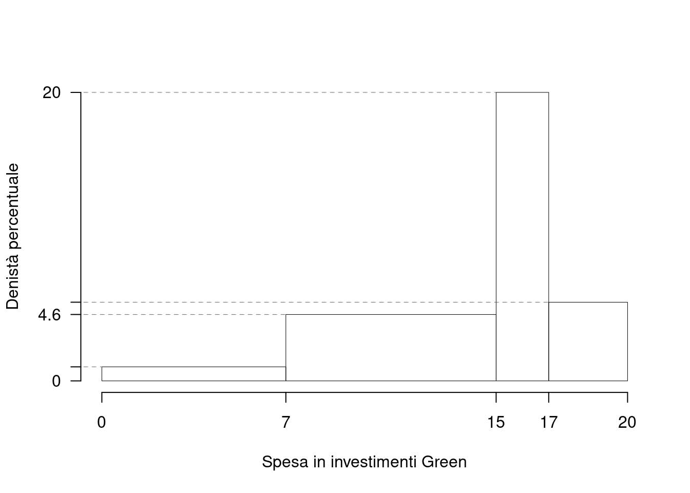
1.b (Punti 3/103 \(\rightarrow\) 0.9/31) Quante aziende hanno una spesa compresa tra il 25-esimo percentile e 15 mila euro?
\[ 221(0.434-0.25)=40.664 \]
1.c (Punti 2/103 \(\rightarrow\) 0.6/31) Che relazione dobbiamo attenderci tra media, mediana e moda?
1.d (Punti 2/103 \(\rightarrow\) 0.6/31) La varianza della spesa è pari a \(Var=17.997\). Se ogni azienda aumentasse la sua spesa del 15%, quanto varrebbe varianza dei dati così trasformati?
Esercizio 2
Una rotatoria incrocia due strade, una che porta da nord a sud e una che porta da est ad ovest.
Il numero di automobili che impegna la rotatoria ogni minuto, in orario di punta,
| dalla direzione nord è descritto da una poisson di parametro 2.1 | \(X_N\sim\text{Pois}(2.1)\) |
| dalla direzione sud è descritto da una poisson di parametro 0.1 | \(X_S\sim\text{Pois}(0.1)\) |
| dalla direzione est è descritto da una poisson di parametro 1.4 | \(X_E\sim\text{Pois}(1.4)\) |
| dalla direzione ovest è descritto da una poisson di parametro 0.2 | \(X_O\sim\text{Pois}(0.2)\). |
Si assume l’indipendenza tra le variabili.
2.a (Punti 14/103 \(\rightarrow\) 4.21/31) Si consideri l’evento \(E\)=“più di due veicoli impegnino la rotatoria”. Calcolare \(P(E)\).
\[ X\sim\text{Pois}(2.1+0.1+1.4+0.2) \]
\[P(X\ge 2) = 1-P(X<2)=1-0.022-0.085= 0.893\]
2.b (Punti 3/103 \(\rightarrow\) 0.9/31) Si osserva la rotatoria per \(n=6\) minuti. Qual è la probabilità che il numero di volte in cui l’evento \(E\) è vero sia uguale a 3?
\[ P(\text{3 su 6})=\binom{6}{3}0.893^3(1-0.893)^3=0.018 \]
2.c (Punti 2/103 \(\rightarrow\) 0.6/31) Se \(X\sim N(0,2)\) e \(X\sim N(1,1.2)\), è vero che \[ X-Y\sim N(-1,0.8) \qquad ? \]
2.d (Punti 2/103 \(\rightarrow\) 0.6/31) Se \(X\) è una VC con supporto {0,1,2} e \(Y\) è una VC con supporto {2,3,4,5}. Qual è il supporto di \(X+Y\)?
il supporto di \(X+Y\) è \(\{2, 3, 4, 5, 6, 7\}\).
Esercizio 3
3.a (Punti 14/103 \(\rightarrow\) 4.21/31) Un’urna contiene 10 palline numerate da 1 a 10. Si vince se il numero estratto è divisibile per tre, altrimenti si perde. Si estrae 50 volte con reintroduzione.
Qual è la probabilità di vincere almeno 20 volte su 50 giocate?
\[ \pi=\frac 3{10} \]
Teorema del Limite Centrale (somma di Bernoulli)
Siano \(X_1\),…,\(X_n\), \(n=50\) VC IID, tc \(X_i\sim\text{Ber}(\pi=0.3)\)\(,\forall i\), posto: \[ S_n = X_1 + ... + X_n \] allora:\[\begin{eqnarray*} S_n & \mathop{\sim}\limits_{a}& N(n\pi,n\pi(1-\pi)) \\ &\sim & N(50\cdot0.3,50\cdot0.3\cdot(1-0.3)) \\ &\sim & N(15,10.5) \end{eqnarray*}\]\[\begin{eqnarray*} P( S_n > 20 ) &=& P\left( \frac { S_n - n\pi }{ \sqrt{n\pi(1-\pi)} } > \frac { 20 - 15 }{\sqrt{ 10.5 }} \right) \\ &=& P\left( Z > 1.54 \right) \\ &=& 1-P(Z< 1.54 )\\ &=& 1-\Phi( 1.54 ) \\ &=& 0.0618 \end{eqnarray*}\]
Esercizio 4
4.a (Punti 3/103 \(\rightarrow\) 0.9/31) Siano \(h_1\) e \(h_2\) due stimatori per \(\theta\), tali che
\[ MSE(h_1) = \frac{\theta}{n^2}, \qquad MSE(h_2) = \frac{\theta}{n} \]
Quale dei due stimatori è più efficiente?
4.b (Punti 3/103 \(\rightarrow\) 0.9/31) Siano \(T_1\) e \(T_2\) due test statistici per la stessa \(H_0\) e con la stessa significatività \(\alpha\). Cosa significa dire che \(T_1\) e più potente di \(T_2\)?
4.c (Punti 3/103 \(\rightarrow\) 0.9/31) Definire la probabilità di significatività osservata.
4.d (Punti 3/103 \(\rightarrow\) 0.9/31) Se in un test statistico che utilizza la statistica test t con 10 gradi di libertà \(t_\text{obs}=1.4\), il \(p_\text{value}\) sarà maggiore o minore di 0.05? Perché?
Esercizio 5
Su un campione di \(n=75\) abitanti del quartiere Q è stato chiesto se siano favorevoli o meno all’introduzione di corsie preferenziali per i mezzi pubblici. Lo studio ha riportato che 45 persone su 75 (il 60% del campione) è favorevole.
5.a (Punti 3/103 \(\rightarrow\) 0.9/31) Costruire un intervallo di confidenza la 95% per \(\pi\) la quota di persone del quartiere Q favorevole alle corsie preferenziali
\(1-\alpha =0.95\) e quindi \(\alpha=0.05\rightarrow \alpha/2=0.025\)
\[ \hat\pi = \frac{S_n}n = \frac{ 0.6 }{ 75 }= 0.008 \]
\[\begin{eqnarray*} Idc: & & \hat\pi \pm z_{\alpha/2} \times \sqrt{\frac{\hat\pi(1-\hat\pi)}{n}} \\ & & 0.008 \pm 1.96 \times \sqrt{\frac{ 0.008 (1- 0.008 )}{ 75 }} \\ & & 0.008 \pm 1.96 \times 0.0103 \\ & & [ -0.0122 , 0.0282 ] \end{eqnarray*}\]
5.b (Punti 11/103 \(\rightarrow\) 3.31/31) Un’indagine molto più ampia condotta su tutta la città ha mostrato che la percentuale di favorevoli alle corsie preferenziali è del 55%. Testare l’ipotesi che nel quartiere Q la quota di favorevoli sia uguale a quella cittadina contro l’alternativa che sia maggiore.
Test \(Z\) per una proporzione
La stima \[\hat\pi=\frac { 45 } { 75 }= 0.6 \]
\(\fbox{A}\) FORMULAZIONE DELLE IPOTESI
\[\begin{cases} H_0: \pi = \pi_0=0.55 \\ H_1: \pi > \pi_0=0.55 \end{cases}\]
\(\fbox{B}\) SCELTA E CALCOLO STATISTICA-TEST, \(Z\) Test Binomiale per \(n\) grande: \(\Rightarrow\) z-Test.
\[\begin{eqnarray*} \frac{\hat\pi - \pi_{0}} {\sqrt {\pi_0(1-\pi_0)/\,n}}&\sim&N(0,1)\\ z_{\text{obs}} &=& \frac{ ( 0.6 - 0.55 )} {\sqrt{ 0.55 (1- 0.55 )/ 75 }} = 0.87 \,. \end{eqnarray*}\]
\(\fbox{C}\) CONCLUSIONE
Il \(p_{\text{value}}\) è
\[ p_{\text{value}} = P(Z>0.87)=0.192044 \]
\[ 0.1 < p_\text{value}= 0.192044 \leq 1 \]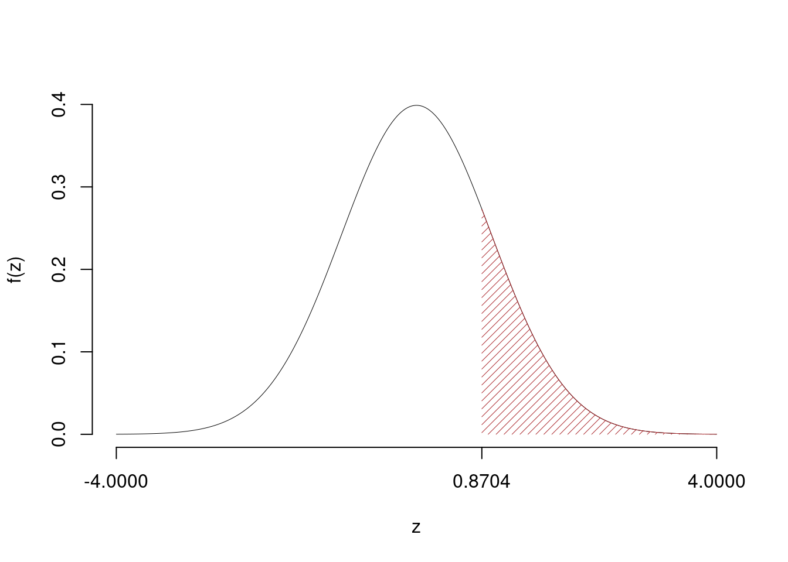
Non rifiuto \(H_0\) a nessun livello di significatività,
\(p_\text{value}>0.1\), non significativo
Esercizio 6
Sono stati analizzati 50 comuni della provincia di Modena e su ogni comune è stato rilevato il numero di abitanti \(X\), espresso in migliaia di persone, e il numero di esercizi commerciali \(Y\).
Qui di seguito le statistiche bivariate
\[\begin{align*} \sum_{i=1}^n x_i &= 741.5 &\sum_{i=1}^n x_i^2 &= 11366.33 &\sum_{i=1}^n x_i y_i &= 7568.707\\ \sum_{i=1}^n y_i &= 483.933 & \sum_{i=1}^n y_i^2 &= 5757.607 & \end{align*}\]
6.a (Punti 14/103 \(\rightarrow\) 4.21/31) Stimare la previsione per \(x=16\) nel modello di regressione dove \(Y\) viene spiegata da \(X\).
\[\begin{eqnarray*} \bar x &=&\frac 1 n\sum_{i=1}^n x_i = \frac {1}{ 50 } 741.5 = 14.8 \\ \bar y &=&\frac 1 n\sum_{i=1}^n y_i = \frac {1}{ 50 } 483.9327 = 9.68 \\ \hat\sigma_X^2&=&\frac 1 n\sum_{i=1}^n x_i^2-\bar x^2=\frac {1}{ 50 } 11366 - 14.83 ^2= 7.4 \\ \hat\sigma_Y^2&=&\frac 1 n\sum_{i=1}^n y_i^2-\bar y^2=\frac {1}{ 50 } 5758 - 9.6787 ^2= 21.5 \\ \text{cov}(X,Y)&=&\frac 1 n\sum_{i=1}^n x_i~y_i-\bar x\bar y=\frac {1}{ 50 } 7569 - 14.83 \cdot 9.6787 = 7.84 \\ \hat\beta_1 &=& \frac{\text{cov}(X,Y)}{\hat\sigma_X^2} \\ &=& \frac{ 7.84 }{ 7.4 } = 1.06 \\ \hat\beta_0 &=& \bar y - \hat\beta_1 \bar x\\ &=& 9.68 - 1.0597 \times 14.83 = -6.04 \end{eqnarray*}\]\[\hat y_{X= 16 }=\hat\beta_0+\hat\beta_1 x= -6.04 + 1.0597 \times 16 = 10.9 \]
6.b (Punti 3/103 \(\rightarrow\) 0.9/31) Il modello si adatta bene ai dati?
\[r^2=0.387\]
6.c (Punti 2/103 \(\rightarrow\) 0.6/31) Cosa sono i punti influenti?
6.d (Punti 2/103 \(\rightarrow\) 0.6/31) Se \(W=2\times Y\) e \(V=X+3\), posto \(w_i=\beta_0'+\beta_1'v_ì +\epsilon_i'\) il modello in cui \(W\) viene spiegata da \(V\), quanto varranno \(\beta_0'\) e \(\beta_1'\)?
\[\begin{eqnarray*} \hat\beta_1' &=& r_{VW}\frac{\sigma_W}{\sigma_V} \\ &=& r_{XY}\frac{2\sigma_Y}{\sigma_X} \\ &=& 2\hat\beta_1\\ &=& 23.314\\ \hat\beta_0' &=& \bar w - \hat\beta_1'\bar v\\ &=& 2\bar y-2\hat\beta_1(\bar x + 3)\\ &=& -18.433 \end{eqnarray*}\]
Prova di Statistica 2022/07/01-3
Esercizio 1
Su un campione di \(220\) imprese energivora della provincia di Bologna è stato rilevata la spesa in investimenti green, espressa in migliaia di euro. Qui di seguito i dati raccolti in classi e le frequenze percentuali.
| \([\text{x}_j,\) | \(\text{x}_{j+1})\) | \(f_{j\%}\) |
|---|---|---|
| 0 | 3 | 16.82 |
| 3 | 5 | 40.00 |
| 5 | 13 | 36.82 |
| 13 | 20 | 6.36 |
| 100.00 |
1.a (Punti 14/103 \(\rightarrow\) 4.21/31) Disegnare l’istogramma delle densità percentuali.
| \([\text{x}_j,\) | \(\text{x}_{j+1})\) | \(n_j\) | \(f_j\) | \(b_j\) | \(h_j\) | \(F_j\) |
|---|---|---|---|---|---|---|
| 0 | 3 | 37 | 0.168 | 3 | 5.606 | 0.168 |
| 3 | 5 | 88 | 0.400 | 2 | 20.000 | 0.568 |
| 5 | 13 | 81 | 0.368 | 8 | 4.602 | 0.936 |
| 13 | 20 | 14 | 0.064 | 7 | 0.909 | 1.000 |
| 220 | 1.000 | 20 |
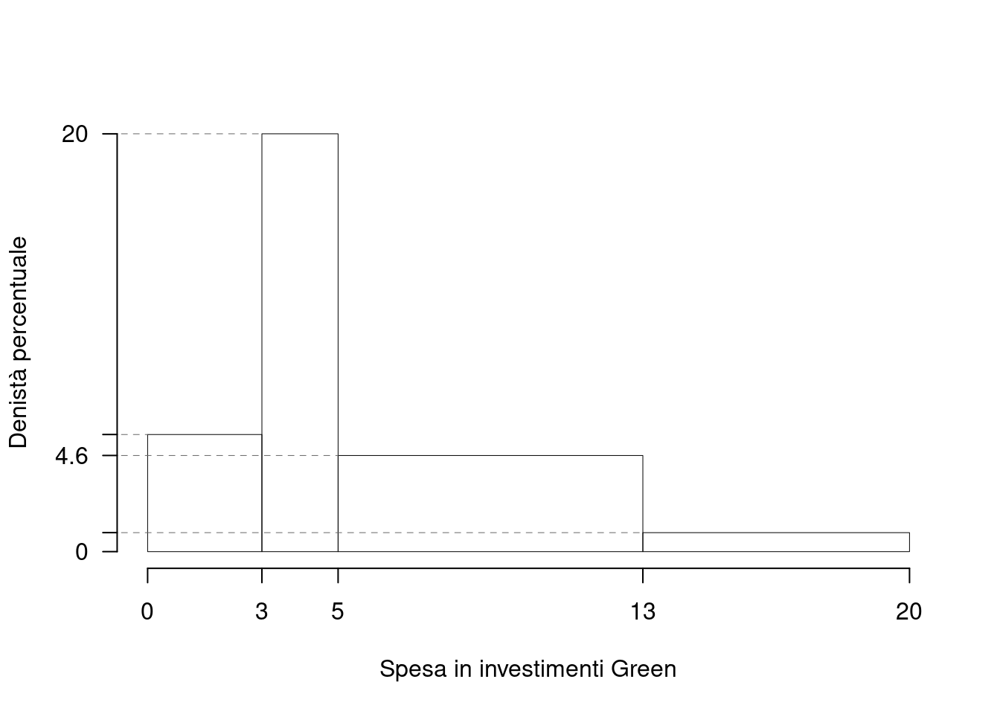
1.b (Punti 3/103 \(\rightarrow\) 0.9/31) Qual è la percentuale di aziende che hanno una spesa compresa tra il 25-esimo percentile e 15 mila euro?
\[\begin{eqnarray*} \%(X<15) &=& F_3+(15-13)\times h_4\\ &=& 0.936\times 100+2\times 0.909\\ &=& 95.455\\ \%(X<x_{0.25}) &=& 25\%\\ \%(x_{0.25}<X<15)&=& 95.455-25\\ &=& 70.455 \end{eqnarray*}\]
1.c (Punti 2/103 \(\rightarrow\) 0.6/31) Che relazione dobbiamo attenderci tra media, mediana e moda?
1.d (Punti 2/103 \(\rightarrow\) 0.6/31) La varianza della spesa è pari a \(Var=17.075\). Se ogni azienda aumentasse la sua spesa di 10 mila euro, quanto varrebbe la media e la varianza dei dati così trasformati?
Esercizio 2
Una moneta perfetta viene lanciata 5 volte, se esce almeno 3 volte testa si estrae da un’urna che contiene un biglietto vincente ed uno perdente, altrimenti si estrae da un’urna che contine due biglietti vincenti e tre perdenti.
2.a (Punti 14/103 \(\rightarrow\) 4.21/31) Qual è la probabilità di vincere?
\[\begin{eqnarray*} P(X=3) &=& 0.132\\ P(X=4) &=& 0.028\\ P(X=5) &=& 0.002\\ P(X\ge 3) &=& 0.5\\ P(\text{Vincere})&=& 0.5\frac12+(1-0.5)\frac23\\ &=& 0.583 \end{eqnarray*}\]
2.b (Punti 3/103 \(\rightarrow\) 0.9/31) Si ripete il gioco di sopra finché non si vince due volte. Qual è la probabilità di finire alla quarta giocata?
\[ 3\times 0.583\times (1-0.583)^3\times 0.583 = 0.074 \]
2.c (Punti 2/103 \(\rightarrow\) 0.6/31) Se \(X\sim \text{Pois}(2)\) e \(Y\sim\text{Pois}(1)\), è vero che \[ X-Y\sim\text{Pois}(1)\qquad ? \]
2.d (Punti 2/103 \(\rightarrow\) 0.6/31) Se \(X\) è una VC con supporto {0,1,2} e \(X\) è una VC con supporto {-2,-1,0}. Qual è il supporto di \(X\times Y\)?
\[ \{-4,-2,-1,0\} \]
Esercizio 3
3.a (Punti 14/103 \(\rightarrow\) 4.21/31) Il supermercato S vende, in media ogni giorno, 102.3 kg di pasta, con una deviazione standard di 10.2. Dopo 60 giorni di apertura, qual è la probabilità che il totale di pasta venduta sia maggiore di 6700 kg?
Teorema del Limite Centrale (somma VC qualunque)
Siano \(X_1\),…,\(X_n\), \(n=60\) VC IID, tc \(E(X_i)=\mu=102\) e \(V(X_i)=\sigma^2=104,\forall i\), posto: \[ S_n = X_1 + ... + X_n \] allora:\[\begin{eqnarray*} S_n & \mathop{\sim}\limits_{a}& N(n\mu,n\sigma^2) \\ &\sim & N(60\cdot102,60\cdot104) \\ &\sim & N(6138,6242) \end{eqnarray*}\]\[\begin{eqnarray*} P( S_n > 6700 ) &=& P\left( \frac { S_n - n\mu }{ \sqrt{n\sigma^2} } > \frac { 6700 - 6138 }{\sqrt{ 6242 }} \right) \\ &=& P\left( Z > 7.11 \right) \\ &=& 1-P(Z< 7.11 )\\ &=& 1-\Phi( 7.11 ) \\ &=& 0 \end{eqnarray*}\]
Esercizio 4
4.a (Punti 3/103 \(\rightarrow\) 0.9/31) Siano \(h_1\) e \(h_2\) due stimatori per \(\theta\), tali che
\[ MSE(h_1) = \frac{\theta}{n^2}, \qquad MSE(h_2) = \frac{\theta}{n^3} \]
Quale dei due stimatori è più efficiente?
4.b (Punti 3/103 \(\rightarrow\) 0.9/31) Se uno stimatore \(h\) per \(\theta\) è tale che \(\lim_{n\to\infty}V(h)=0\), di quali proprietà gode \(h\)?
4.c (Punti 3/103 \(\rightarrow\) 0.9/31) Un intervallo di confidenza per \(\theta\) al 95% è più ampio o meno ampio di uno al 99%? Perché?
4.d (Punti 3/103 \(\rightarrow\) 0.9/31) Se in un test statistico che utilizza la statistica test t con 10 gradi di libertà \(t_\text{obs}=14\), il \(p_\text{value}\) sarà maggiore o minore di 0.05? Perché?
Esercizio 5
Su un campione di \(n=15\) abitanti del quartiere Q è stato chiesto di fornire un punteggio da 0 a 100 per esprimere quanto si sarebbe soddisfatti dall’introduzione di corsie preferenziali per i mezzi pubblici. Lo studio ha riportato una media pari a \(76.3\) e una deviazione standard pari a \(3.5\)
5.a (Punti 3/103 \(\rightarrow\) 0.9/31) Costruire un intervallo di confidenza la 99% per \(\mu\) il punteggio medio che le persone del quartiere Q esprimono riguardo alle corsie preferenziali.
\(1-\alpha =0.99\) e quindi \(\alpha=0.01\rightarrow \alpha/2=0.005\)
\[ S =\sqrt{\frac {n}{n-1}}\cdot\hat\sigma = \sqrt{\frac { 15 }{ 14 }}\cdot 3.5 = 3.6228 \] \[\begin{eqnarray*} Idc: & & \hat\mu \pm t_{n-1;\alpha/2} \times \frac{S}{\sqrt{n}} \\ & & 76.3 \pm 2.98 \times \frac{ 3.6228 }{\sqrt{ 15 }} \\ & & 76.3 \pm 2.98 \times 0.935 \\ & & [ 73.5 , 79.1 ] \end{eqnarray*}\]
5.b (Punti 11/103 \(\rightarrow\) 3.31/31) Un’indagine molto più ampia condotta su tutta la città ha mostrato che il punteggio medio è pari a 66.3 con un deviazione standard pari a 3.3 .
Testare l’ipotesi che nel quartiere Q il punteggio medio sia uguale a quello cittadino contro l’alternativa che sia maggiore.
Test \(Z\) per una media, variazna nota
\(\fbox{A}\) FORMULAZIONE DELLE IPOTESI
\[\begin{cases} H_0: \mu = \mu_0=66.3 \\ H_1: \mu > \mu_0=66.3 \end{cases}\]
\(\fbox{B}\) SCELTA E CALCOLO STATISTICA-TEST, \(Z\)
\(\sigma^{2}\) di \(\cal{P}\) è nota: \(\Rightarrow\) z-Test.
\[\begin{eqnarray*} \frac{\hat\mu - \mu_{0}} {\sigma/\sqrt{n}}&\sim&N(0,1)\\ z_{\text{obs}} &=& \frac{ ( 76.3 - 66.3 )} { 3.3 /\sqrt{ 15 }} = 11.7 \, . \end{eqnarray*}\]
\(\fbox{C}\) CONCLUSIONE
Consideriamo \(\alpha=0.1, 0.05, 0.01, 0.001\)
I valori critici sono
\(z_{0.1}=1.2816\); \(z_{0.05}=1.6449\); \(z_{0.01}=2.3263\); \(z_{0.001}=3.0902\)
Siccome \(z_\text{obs}=11.7363>3.0902\), quindi rifiuto \(H_0\) sotto all’1‰,
\(p_\text{value}<0.001\), estremamente significativo \(\fbox{***}\).
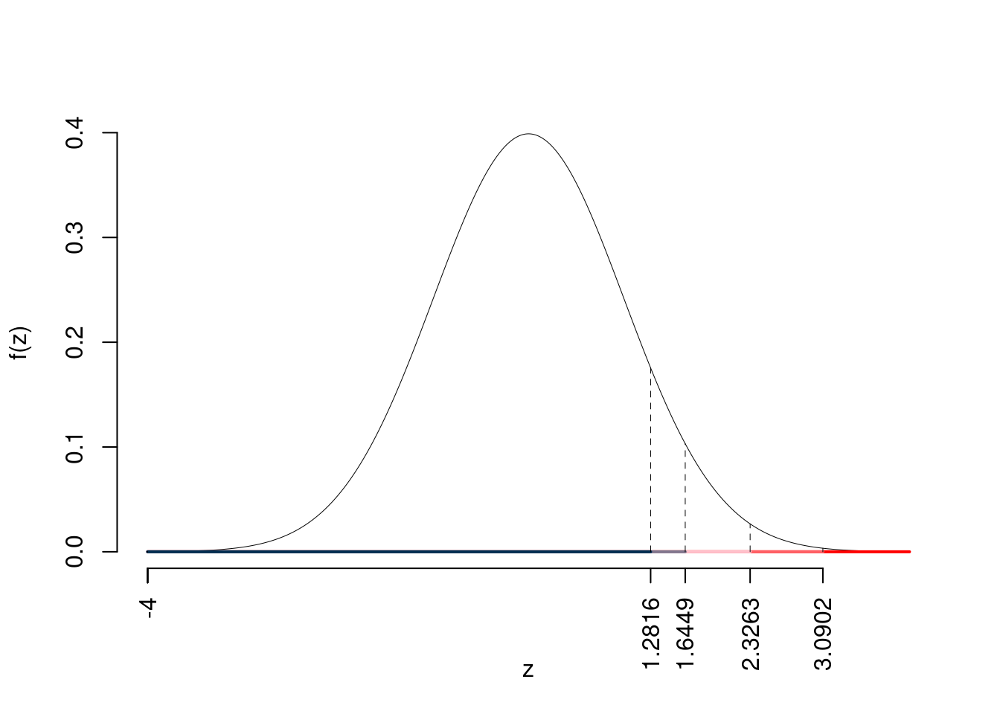
Il \(p_{\text{value}}\) è
\[ p_{\text{value}} = P(Z>11.74)=0e+00 \]
\[ 0 < p_\text{value}= 0e+00 \leq 0.001 \]
Esercizio 6
Sono stati analizzati 50 comuni della provincia di Modena e su ogni comune è stato rilevato il numero di abitanti \(X\), espresso in migliaia di persone, e il numero di esercizi commerciali \(Y\).
Qui di seguito le statistiche bivariate
\[\begin{align*} \sum_{i=1}^n x_i &= 724 &\sum_{i=1}^n x_i^2 &= 10924.84 &\sum_{i=1}^n x_i y_i &= 7070.542\\ \sum_{i=1}^n y_i &= 455.063 & \sum_{i=1}^n y_i^2 &= 4962.846 & \end{align*}\]
6.a (Punti 14/103 \(\rightarrow\) 4.21/31) Questi sono alcuni dei dati osservati
| \(x_i\) | 12.4 | 13.50 | 16.4 | 14.10 |
| \(y_i\) | 12.0 | 4.87 | 10.2 | 8.99 |
Calcolare il residuo per \(x=16.4\) nel modello di regressione dove \(Y\) è spiegato da \(X\).
\[\begin{eqnarray*} \bar x &=&\frac 1 n\sum_{i=1}^n x_i = \frac {1}{ 50 } 724 = 14.5 \\ \bar y &=&\frac 1 n\sum_{i=1}^n y_i = \frac {1}{ 50 } 455.0632 = 9.1 \\ \hat\sigma_X^2&=&\frac 1 n\sum_{i=1}^n x_i^2-\bar x^2=\frac {1}{ 50 } 10925 - 14.48 ^2= 8.83 \\ \hat\sigma_Y^2&=&\frac 1 n\sum_{i=1}^n y_i^2-\bar y^2=\frac {1}{ 50 } 4963 - 9.1013 ^2= 16.4 \\ \text{cov}(X,Y)&=&\frac 1 n\sum_{i=1}^n x_i~y_i-\bar x\bar y=\frac {1}{ 50 } 7071 - 14.48 \cdot 9.1013 = 9.62 \\ \hat\beta_1 &=& \frac{\text{cov}(X,Y)}{\hat\sigma_X^2} \\ &=& \frac{ 9.62 }{ 8.83 } = 1.09 \\ \hat\beta_0 &=& \bar y - \hat\beta_1 \bar x\\ &=& 9.1 - 1.0904 \times 14.48 = -6.69 \end{eqnarray*}\]\[\begin{eqnarray*} \hat y_i &=&\hat\beta_0+\hat\beta_1 x_i=\\ &=& -6.69 + 1.0904 \times 16.4 = 11.2 \\ \hat \varepsilon_i &=& y_i-\hat y_i\\ &=& 10.3 - 11.2 = -0.941 \end{eqnarray*}\]
6.b (Punti 3/103 \(\rightarrow\) 0.9/31) Ricavare numericamente la scomposizione della varianza del modello di regressione sopra stimato.
\[\begin{eqnarray*} TSS &=& n\hat\sigma^2_Y\\ &=& 50 \times 16.4 \\ &=& 821 \\ ESS &=& R^2\cdot TSS\\ &=& 0.639 \cdot 821 \\ &=& 525 \\ RSS &=& (1-R^2)\cdot TSS\\ &=& (1- 0.639 )\cdot 821 \\ &=& 296 \\ TSS &=& ESS+RSS \\ 821 &=& 525 + 296 \end{eqnarray*}\]
6.c (Punti 2/103 \(\rightarrow\) 0.6/31) Che differenza c’è tra interpolazione e estrapolazione?
6.d (Punti 2/103 \(\rightarrow\) 0.6/31) Cosa significa che \(r\) è un numero puro?
Prova di Statistica 2022/07/27-1
Esercizio 1
Su un campione di \(220\) imprese della provincia di Milano è stato rilevato il bilancio, espresso in migliaia di euro, del 2020. Qui di seguito i dati raccolti in classi e le frequenze percentuali.
| \([\text{x}_j,\) | \(\text{x}_{j+1})\) | \(f_{j\%}\) |
|---|---|---|
| 0 | 3 | 2.73 |
| 3 | 5 | 40.00 |
| 5 | 13 | 34.09 |
| 13 | 20 | 23.18 |
| 100.00 |
1.a (Punti 14/106 \(\rightarrow\) 4.09/31) Individuare la classe modale.
| \([\text{x}_j,\) | \(\text{x}_{j+1})\) | \(n_j\) | \(f_j\) | \(b_j\) | \(h_j\) | \(F_j\) |
|---|---|---|---|---|---|---|
| 0 | 3 | 6 | 0.027 | 3 | 0.909 | 0.027 |
| 3 | 5 | 88 | 0.400 | 2 | 20.000 | 0.427 |
| 5 | 13 | 75 | 0.341 | 8 | 4.261 | 0.768 |
| 13 | 20 | 51 | 0.232 | 7 | 3.312 | 1.000 |
| 220 | 1.000 | 20 |
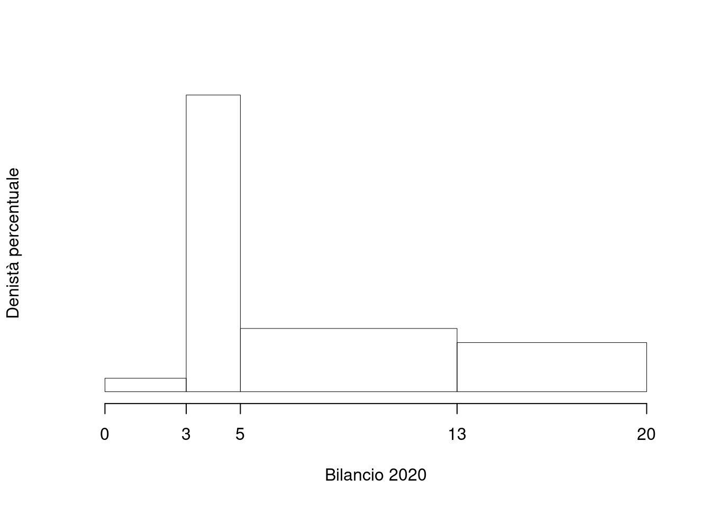
1.b (Punti 3/106 \(\rightarrow\) 0.88/31) Quante imprese hanno un bilancio compreso tra \(-4\) mila euro e zero.
\[\#(-1<X<0)=\frac{(0-(-4))20}{100}\times 220=0\]
1.c (Punti 2/106 \(\rightarrow\) 0.58/31) La media è risultata essere \(\bar x=8.446\); che relazione mi devo aspettare tra mediana e moda?
\[\bar x<x_{0.5}<x_{Mo}\]
1.d (Punti 2/106 \(\rightarrow\) 0.58/31) Siano \(x_1,...,x_n\), \(n\) numeri, \(n\) dispari. Si consideri la funzione: \[g(x)=|x_1-x|+...+|x_n-x|.\] Per quale valore di \(x\), \(g(x)\) è minima?
La funzione \(g\) è minimizzata nel valore della mediana. \[x_{0.5}=x_{((n+1)/2)}\]
Esercizio 2
Siano \(X\sim N(5,1/2)\) e sia \(Y\sim N(5,1/2)\), \(X\) e \(Y\) indipendenti. Posto \(A=\{X>6\}\), \(B=\{Y<4\}\).
2.a (Punti 14/106 \(\rightarrow\) 4.09/31) Calcolare \(P(A\cup B)\).
\[\begin{eqnarray*} P( X > 6 ) &=& P\left( \frac { X - \mu }{ \sigma } > \frac { 6 - 5 }{\sqrt{ 0.5 }} \right) \\ &=& P\left( Z > 1.41 \right) \\ &=& 1-P(Z< 1.41 )\\ &=& 1-\Phi( 1.41 ) \\ &=& 0.0793 \end{eqnarray*}\]
\[\begin{eqnarray*} P( Y < 4 ) &=& P\left( \frac { Y - \mu_Y }{ \sigma_Y } < \frac { 4 - 5 }{\sqrt{ 0.5 }} \right) \\ &=& P\left( Z < -1.41 \right) \\ &=& 1-\Phi( 1.41 ) \\ &=& 0.0793 \end{eqnarray*}\]
e quindi
\[\begin{eqnarray*} P(A\cup B) &=& P(A)+P(B)-P(A\cap B)\\ &=& 0.079+0.079-0.079\times0.079\\ &=& 0.151 \end{eqnarray*}\]
2.b (Punti 3/106 \(\rightarrow\) 0.88/31) Posto \(Z=X-Y\), Calcolare la probabilità che \(P(Z>1|Z\le 2)\).
\[\begin{eqnarray*} Z &=& X-Y\\ &\sim& N(5-5,1/2+1/2)\\ &\sim& N(0,1)\\ P(Z>1|Z\le 2) &=&\frac{P(\{Z>1\}\cap\{Z\le 2\})}{P(Z\le 2)} \\ &=& \frac{P(1<Z\le 2)}{P(Z\le 2)} \\ &=&\frac{\Phi(2)-\Phi(1)}{\Phi(2)}\\ &=&\frac{0.977-0.841}{0.977}\\ &=&0.139 \end{eqnarray*}\]
2.c (Punti 2/106 \(\rightarrow\) 0.58/31) Siano \(A\) e \(B\) due eventi diversi dal vuoto. Sono noti \(P(A|B)=0.3\), \(P(A|\bar B)=0.15\). \(A\) e \(B\) sono indipendenti? Perché?
No, perché se lo fossero \[ P(A|B)=P(A|\bar B)=P(A) \]
2.d (Punti 2/106 \(\rightarrow\) 0.58/31) Sia \(X\sim\text{Pois}(\lambda=1)\), disegnare la funzione di ripartizione \(F(x)\) di \(X\), per \(x\) compreso tra \(-1\) e \(2.5\).
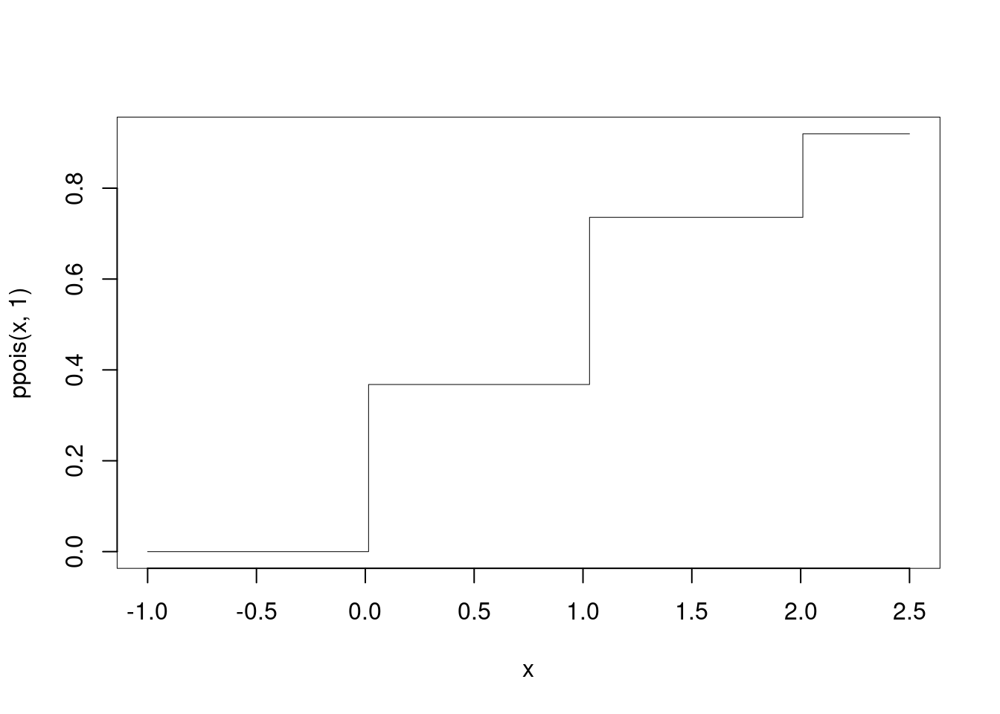
Esercizio 3
3.a (Punti 14/106 \(\rightarrow\) 4.09/31) Un’urna contiene tre palline, una Rossa, una Blue e una Nera. Si vince se esce Rossa. Si ripete il gioco per \(144\) volte. Qual è la probabilità che la proporzione di vincite sia maggiore di 0.35?
Teorema del Limite Centrale (proporzione)
Siano \(X_1\),…,\(X_n\), \(n=144\) VC IID, tc \(X_i\sim\text{Ber}(\pi=0.333)\)\(,\forall i\), posto: \[ \hat\pi=\frac{S_n}n = \frac{X_1 + ... + X_n}n \] allora:\[\begin{eqnarray*} \hat\pi & \mathop{\sim}\limits_{a}& N(\pi,\pi(1-\pi)/n) \\ &\sim & N\left(0.333,\frac{0.333\cdot(1-0.333)}{144}\right) \\ &\sim & N(0.333,0.00154) \end{eqnarray*}\]\[\begin{eqnarray*} P( \hat\pi > 0.35 ) &=& P\left( \frac { \hat\pi - \pi }{ \sqrt{\pi(1-\pi)/n} } > \frac { 0.35 - 0.333 }{\sqrt{ 0.00154 }} \right) \\ &=& P\left( Z > 0.42 \right) \\ &=& 1-P(Z< 0.42 )\\ &=& 1-\Phi( 0.42 ) \\ &=& 0.3372 \end{eqnarray*}\]
Esercizio 4
4.a (Punti 3/106 \(\rightarrow\) 0.88/31) Sia \(\hat \lambda\) lo stimatore di massima verosimiglianza di \(\lambda\) del modello di Poisson: \(\hat\lambda = \frac 1n\sum_{i=1}^nx_i\) Scrivere la Varianza di \(\hat \lambda\).
4.b (Punti 3/106 \(\rightarrow\) 0.88/31) Se \(h\) è uno stimatore per \(\theta\) tale che \(E(h)\ne \theta\) e che \(\lim_ {n\to +\infty}V(h)=0\) di quale proprietà gode \(h\)?
4.c (Punti 3/106 \(\rightarrow\) 0.88/31) Definire gli errori di primo e di secondo tipo di un test statistico e le relative probabilità.
4.d (Punti 3/106 \(\rightarrow\) 0.88/31) In un confronto tra due campioni viene messo a test \[ \begin{cases} H_0:\sigma_A=\sigma_B\\ H_1:\sigma_A\ne \sigma_B \end{cases} \] Risulta \(p_\text{value}=0.002\). Alla luce di questo risultato, per testare la differenza tra le medie, cosa è preferibile, un test sotto ipotesi di omogeneità, oppure sotto ipotesi di eterogeneità? Perché?
Esercizio 5
5.a (Punti 14/106 \(\rightarrow\) 4.09/31) In uno studio sule preferenze di genere è stato chiesto ad un campione di 150 persone, divise 80 signori e 70 signore, di esprimere la propria preferenza tra tre profumazioni (A, B e C) di shampoo. Qui di seguita la tavola di contingenza
| A | B | C | Tot | |
|---|---|---|---|---|
| M | 50 | 10 | 20 | 80 |
| F | 5 | 55 | 10 | 70 |
| Tot | 55 | 65 | 30 | 150 |
Testare l’ipotesi che vi sia indipendenza tra genere e preferenza tra le profumazioni.
Test \(\chi^2\) per indipendenza
\(\fbox{A}\) FORMULAZIONE DELLE IPOTESI \[ \Big\{H_0:\pi_{ij}=\pi_{i\bullet}\pi_{\bullet j} \] \(\fbox{B}\) SCELTA E CALCOLO STATISTICA-TEST, \(\chi^2\)
Si usa il test \(\chi^2\), si crea la tabella delle frequenze teoriche \[ n_{ij}^*=\frac{n_{i\bullet}n_{\bullet j}}{n} \]| A | B | C | |
|---|---|---|---|
| M | 29.3 | 34.7 | 16 |
| F | 25.7 | 30.3 | 14 |
| A | B | C | |
|---|---|---|---|
| M | 14.6 | 17.6 | 1.00 |
| F | 16.6 | 20.1 | 1.14 |
\[ \chi^2_{obs}= 71 \]
i \(gdl\)
\[ ( 2 -1)\times( 3 -1)= 2 \]
\(\fbox{C}\) CONCLUSIONE
I valori critici sono
\(\chi^2_{2;0.1}=4.6052\); \(\chi^2_{2;0.05}=5.9915\); \(\chi^2_{2;0.01}=9.2103\); \(\chi^2_{2;0.001}=13.8155\)
Siccome \(\chi^2_\text{obs}=70.954>13.8155\), quindi rifiuto \(H_0\) sotto all’1‰, \(p_\text{value}<0.001\),
estremamente significativo \(\fbox{***}\).
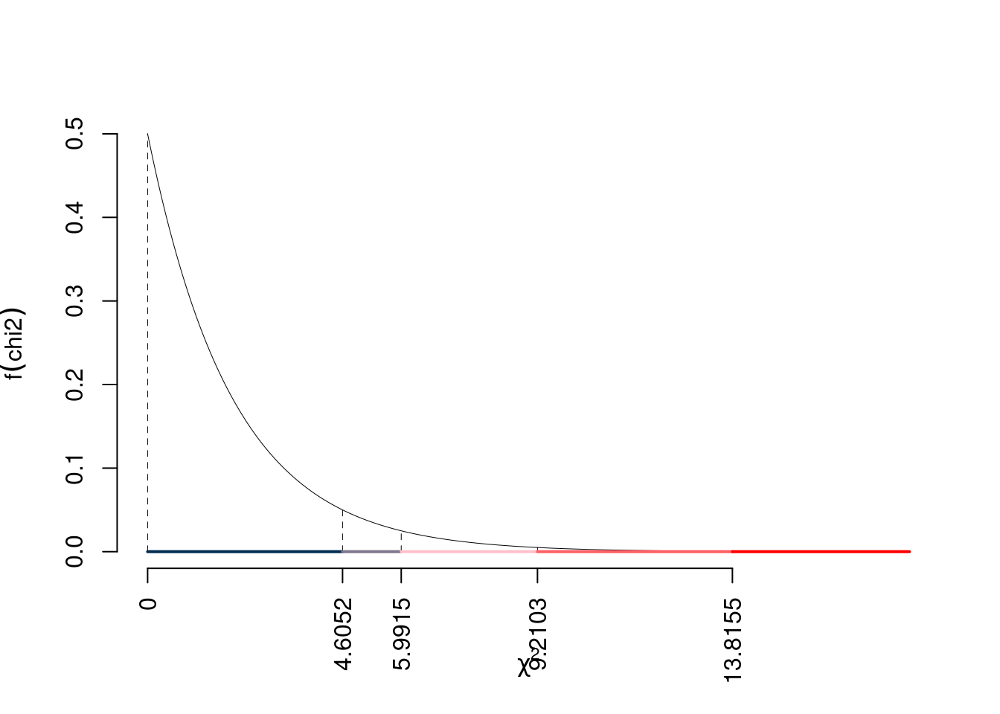
Il \(p_{\text{value}}\) è
\[ p_{\text{value}} = P(\chi^2_{2}>70.95)=4.44089209850063e-16 \]
Attenzione il calcolo del \(p_\text{value}\) con la distribuzione \(\chi^2\) è puramente illustrativo e non può essere riprodotto senza una calcolatrice statistica adeguata.\[ 0 \leq p_\text{value}= 4.44e-16 < 0.001 \]
Esercizio 6
Sono stati analizzati 5 comuni della provincia di Bologna e su ogni comune è stato rilevato il PIL pro capite del comune \(X\), espresso in decine di migliaia di euro e un valore di percezione di qualità della vita \(Y\) (espresso su opportuna scala).
Qui di seguito i dati
| A | B | C | D | E | |
|---|---|---|---|---|---|
| \(x_i\) | 0.4 | 1.0 | 1.3 | 2.7 | 3.1 |
| \(y_i\) | 3.2 | 6.8 | 5.0 | 6.9 | 6.3 |
6.a (Punti 14/106 \(\rightarrow\) 4.09/31) Calcolare il residuo del comune B nel modello di regressione dove \(Y\) viene spiegata da \(X\).
| \(i\) | \(x_i\) | \(y_i\) | \(x_i^2\) | \(y_i^2\) | \(x_i\cdot y_i\) |
|---|---|---|---|---|---|
| 1 | 0.4 | 3.20 | 0.16 | 10.2 | 1.28 |
| 2 | 1.0 | 6.80 | 1.00 | 46.2 | 6.80 |
| 3 | 1.3 | 5.00 | 1.69 | 25.0 | 6.50 |
| 4 | 2.7 | 6.90 | 7.29 | 47.6 | 18.63 |
| 5 | 3.1 | 6.30 | 9.61 | 39.7 | 19.53 |
| Totale | 8.5 | 28.20 | 19.75 | 168.8 | 52.74 |
| Totale/n | 1.7 | 5.64 | 3.95 | 33.8 | 10.55 |
\[\begin{eqnarray*} \bar x &=&\frac 1 n\sum_{i=1}^n x_i = \frac {1}{ 5 } 8.5 = 1.7 \\ \bar y &=&\frac 1 n\sum_{i=1}^n y_i = \frac {1}{ 5 } 28.2 = 5.64 \\ \hat\sigma_X^2&=&\frac 1 n\sum_{i=1}^n x_i^2-\bar x^2=\frac {1}{ 5 } 19.8 - 1.7 ^2= 1.06 \\ \hat\sigma_Y^2&=&\frac 1 n\sum_{i=1}^n y_i^2-\bar y^2=\frac {1}{ 5 } 169 - 5.64 ^2= 1.95 \\ \text{cov}(X,Y)&=&\frac 1 n\sum_{i=1}^n x_i~y_i-\bar x\bar y=\frac {1}{ 5 } 52.7 - 1.7 \cdot 5.64 = 0.96 \\ \hat\beta_1 &=& \frac{\text{cov}(X,Y)}{\hat\sigma_X^2} \\ &=& \frac{ 0.96 }{ 1.06 } = 0.906 \\ \hat\beta_0 &=& \bar y - \hat\beta_1 \bar x\\ &=& 5.64 - 0.9057 \times 1.7 = 4.1 \end{eqnarray*}\]\[\begin{eqnarray*} \hat y_i &=&\hat\beta_0+\hat\beta_1 x_i=\\ &=& 4.1 + 0.9057 \times 1 = 5.01 \\ \hat \varepsilon_i &=& y_i-\hat y_i\\ &=& 6.8 - 5.01 = 1.79 \end{eqnarray*}\]
6.b (Punti 3/106 \(\rightarrow\) 0.88/31) Scrivere la scomposizione della varianza del modello di regressione e calcolare la Total Sum of Squares (TSS), la Explained Sum of Squares (ESS) e la Residual Sum of Squares (RSS) dei dati analizzati sopra.
\[\begin{eqnarray*} TSS &=& n\hat\sigma^2_Y\\ &=& 5 \times 1.95 \\ &=& 9.73 \\ ESS &=& R^2\cdot TSS\\ &=& 0.447 \cdot 9.73 \\ &=& 4.35 \\ RSS &=& (1-R^2)\cdot TSS\\ &=& (1- 0.447 )\cdot 9.73 \\ &=& 5.38 \\ TSS &=& ESS+RSS \\ 9.73 &=& 4.35 + 5.38 \end{eqnarray*}\]
6.c (Punti 3/106 \(\rightarrow\) 0.88/31) Interpretare il parametro di regressione \(\hat\beta_1\).
6.d (Punti 2/106 \(\rightarrow\) 0.58/31) Descrivere la differenza tra punti di leva e punti influenti.
6.e (Punti 2/106 \(\rightarrow\) 0.58/31) Gli stimatori \(\hat\beta_0\) e \(\hat\beta_1\) dei minimi quadrati per \(\beta_0\) e \(\beta_1\) sono corretti?
Prova di Statistica 2022/07/27-2
r
Esercizio 1
Su un campione di \(220\) imprese della provincia di Milano è stato rilevato il bilancio, espresso in migliaia di euro, del 2020. Qui di seguito i dati raccolti in classi e le frequenze cumulate.
| \([\text{x}_j,\) | \(\text{x}_{j+1})\) | \(F_j\) |
|---|---|---|
| -10 | -5 | 0.036 |
| -5 | 0 | 0.305 |
| 0 | 2 | 0.768 |
| 2 | 4 | 0.923 |
| 4 | 6 | 1.000 |
1.a (Punti 14/106 \(\rightarrow\) 4.09/31) Disegnare l’istogramma delle densità percentuali.
| \([\text{x}_j,\) | \(\text{x}_{j+1})\) | \(n_j\) | \(f_j\) | \(b_j\) | \(h_j\) | \(F_j\) |
|---|---|---|---|---|---|---|
| -10 | -5 | 8 | 0.036 | 5 | 0.727 | 0.036 |
| -5 | 0 | 59 | 0.268 | 5 | 5.364 | 0.305 |
| 0 | 2 | 102 | 0.464 | 2 | 23.182 | 0.768 |
| 2 | 4 | 34 | 0.155 | 2 | 7.727 | 0.923 |
| 4 | 6 | 17 | 0.077 | 2 | 3.864 | 1.000 |
| 220 | 1.000 | 16 |
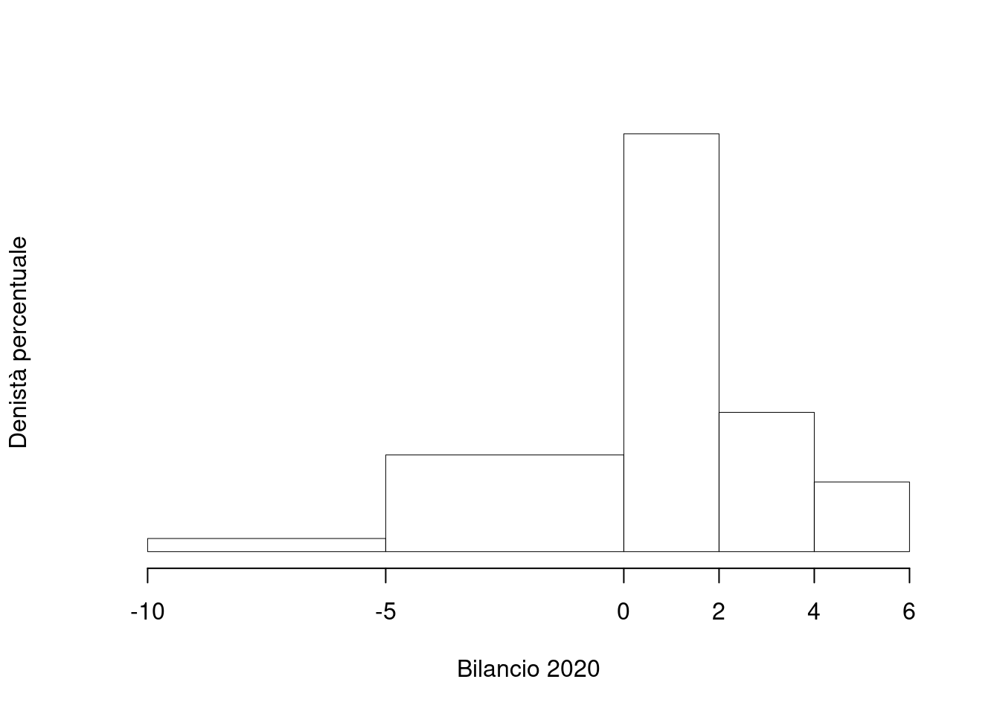
1.b (Punti 3/106 \(\rightarrow\) 0.88/31) Quante aziende hanno un bilancio compreso tra il 25-esimo percentile e 3.5 mila euro?
\[\#(x_{0.25}<X<0)=n(F(3.5)-0.25)=220(0.884-0.25)=139.5\]
1.c (Punti 2/106 \(\rightarrow\) 0.58/31) Che relazione dobbiamo attenderci tra media, mediana e moda?
\[\bar x<x_{0.5}<x_{Mo}\]
1.d (Punti 2/106 \(\rightarrow\) 0.58/31) Siano \(x_1,...,x_n\), \(n\) numeri. Si consideri la funzione: \[g(x)=(x_1-x)^2+...+(x_n-x)^2.\] Per quale valore di \(x\), \(g(x)\) è minima?
Esercizio 2
In una strada, in prossimità di un dato incrocio, ci sono 3 corsie. In orario di punta, il numero di automobili che impegna la corsia sinistra è descritto da una Poisson di parametro 1.1, \(X_S\sim\text{Pois}(1.1)\), per quella di centro da una Poisson di parametro 1.0, \(X_C\sim\text{Pois}(1.0)\) e per quella di destra da una Poisson di parametro 0.9, \(X_D\sim\text{Pois}(0.9)\). Si assume l’indipendenza tra le variabili.
2.a (Punti 14/106 \(\rightarrow\) 4.09/31) Si consideri l’evento \(E\)=“più di due veicoli impegnano l’incrocio”. Calcolare \(P(E)\).
Posto \(X=X_S+X_C+X_D\) osserviamo che \[X\sim\text{Pois}(\lambda=1.1+0.9+1)\] e quindi \[P(X\ge 2)=1-P(X\le 1)=1-(0.05+0.149)=0.801\]
2.b (Punti 3/106 \(\rightarrow\) 0.88/31) Calcolare \[ P(X_S+X_C+X_D=3|X_S+X_C+X_D\ge 2). \]
Posto \(X=X_S+X_C+X_D\) osserviamo che \[\{X=3\}\cap\{X \ge 2\}=\{X=3\}\] e quindi \[\begin{eqnarray*} P(X=3|X\ge 2) &=& \frac{P(\{X=3\}\cap\{X \ge 2\})}{P(X \ge 2)}\\ &=&\frac{P(X=3)}{P(X \ge 2)}\\ &=&\frac{0.224}{0.801}=0.28\\ \end{eqnarray*}\]
2.c (Punti 2/106 \(\rightarrow\) 0.58/31) Siano \(X\sim N(0,1)\) e \(Y\sim N(0,1)\), \(X\) e \(Y\) indipendenti. Come si distribuisce \(X^2+Y^2\)?
2.d (Punti 2/106 \(\rightarrow\) 0.58/31) Se \(X\) è una VC con supporto {2,3,4,5} e \(Y\) è una VC con supporto {1,2,6}. Qual è il supporto di \(X-Y\)?
\(S_{X-Y}=-4, -3, -2, -1, 0, 1, 2, 3, 4\)
Esercizio 3
3.a (Punti 14/106 \(\rightarrow\) 4.09/31) Un’urna contiene 4 palline numerate da 1 a 4. Si estrae 100 volte con reinserimento e si fa la media dei 100 numeri estratti. Qual è la probabilità che la media sia compresa tra 2.5 e 2.6?
\[\begin{eqnarray*} \mu &=& E(X_i) = \sum_{x\in S_X}x P(X=x)\\ &=& 1 \frac { 1 }{ 4 }+ 2 \frac { 1 }{ 4 }+ 3 \frac { 1 }{ 4 }+ 4 \frac { 1 }{ 4 } \\ &=& 2.5 \\ \sigma^2 &=& V(X_i) = \sum_{x\in S_X}x^2 P(X=x)-\mu^2\\ &=&\left( 1 ^2\frac { 1 }{ 4 }+ 2 ^2\frac { 1 }{ 4 }+ 3 ^2\frac { 1 }{ 4 }+ 4 ^2\frac { 1 }{ 4 } \right)-( 2.5 )^2\\ &=& 1.25 \end{eqnarray*}\] Teorema del Limite Centrale (media VC qualunque)
Siano \(X_1\),…,\(X_n\), \(n=100\) VC IID, tc \(E(X_i)=\mu=2.5\) e \(V(X_i)=\sigma^2=1.25,\forall i\), posto: \[ \bar X=\frac{S_n}n =\frac{X_1 + ... + X_n}n \] allora:\[\begin{eqnarray*} \bar X & \mathop{\sim}\limits_{a}& N(\mu,\sigma^2/n) \\ &\sim & N\left(2.5,\frac{1.25}{100}\right) \\ &\sim & N(2.5,0.0125) \end{eqnarray*}\]\[\begin{eqnarray*} P( 2.5 < \bar X \leq 2.6 ) &=& P\left( \frac { 2.5 - 2.5 }{\sqrt{ 0.0125 }} < \frac { \bar X - \mu }{ \sqrt{\sigma^2/n} } \leq \frac { 2.6 - 2.5 }{\sqrt{ 0.0125 }}\right) \\ &=& P\left( 0 < Z \leq 0.89 \right) \\ &=& \Phi( 0.89 )-\Phi( 0 )\\ &=& 0.8133 - 0.5 \\ &=& 0.313 \end{eqnarray*}\]
Esercizio 4
4.a (Punti 3/106 \(\rightarrow\) 0.88/31) Siano \(h_1\) e \(h_2\) due stimatori per \(\theta\), tali che
\[ MSE(h_1) = \frac{\theta}{\sqrt{n}}, \qquad MSE(h_2) = \frac{\theta}{n} \]
Quale dei due stimatori è più efficiente?
4.b (Punti 3/106 \(\rightarrow\) 0.88/31) Sia \(\hat\sigma^2\) lo stimatore di massima verosimiglianza di \(\sigma^2\). In virtù di quale proprietà \(\hat \sigma\) è lo stimatore di massima verosimiglianza per \(\sigma\)?
4.c (Punti 3/106 \(\rightarrow\) 0.88/31) Siano \(T_1\) e \(T_2\) due test per lo stesso sistema di ipotesi, con uguale significatività \(\alpha=0.05\) e con probabilità di errore di secondo tipo, \(\beta_1=0.3\) per il test \(T_1\) e \(\beta_2=0.15\) per il test \(T_2\). Quale dei due test è più potente?
4.d (Punti 3/106 \(\rightarrow\) 0.88/31) Se in un test statistico bilaterale che utilizza la statistica test t con 11 gradi di libertà, \(t_\text{obs}=142.3\), il \(p_\text{value}\) sarà maggiore o minore di 0.01? Perché?
Esercizio 5
Su un campione di \(n_M=35\) consumatori privati, scelti a caso tra i cittadini del comune di Modena, si è chiesto quanto spendono mensilmente per le forniture elettriche. Il campione ha restituito una media pari a 12.4 €/mese, con una deviazione standard pari a 2.1 €/mese,
5.a (Punti 3/106 \(\rightarrow\) 0.88/31) Costruire un Intervallo di Confidenza al 95% per la media di popolazione \(\mu\).
\(1-\alpha =0.95\) e quindi \(\alpha=0.05\rightarrow \alpha/2=0.025\)
\[ S =\sqrt{\frac {n}{n-1}}\cdot\hat\sigma = \sqrt{\frac { 35 }{ 34 }}\cdot 2.1 = 2.1307 \] \[\begin{eqnarray*} Idc: & & \hat\mu \pm t_{n-1;\alpha/2} \times \frac{S}{\sqrt{n}} \\ & & 12.4 \pm 2.03 \times \frac{ 2.1307 }{\sqrt{ 35 }} \\ & & 12.4 \pm 2.03 \times 0.36 \\ & & [ 11.7 , 13.1 ] \end{eqnarray*}\]
5.b (Punti 11/106 \(\rightarrow\) 3.22/31) La stessa domanda è stata posta ad un secondo campione di \(n_F=38\) consumatori privati,scelti a caso tra i cittadini del comune di Ferrara. Il campione ha restituito una media pari a 19.2 €/mese, con una deviazione standard pari a 3.9 €/mese. Sotto ipotesi di eterogeneità testare l’ipotesi che i due comuni abbiano uguale media, contro l’alternativa che a Ferrara consumino di più.
Test \(t\) per due medie, (eterogeneità)
\(\fbox{A}\) FORMULAZIONE DELLE IPOTESI
\[\begin{cases} H_0: \mu_\text{A} = \mu_\text{B} \\ H_1: \mu_\text{A} < \mu_\text{B} \end{cases}\]
\(\fbox{B}\) SCELTA E CALCOLO STATISTICA-TEST, \(T\) \[ S^2_\text{ 1 }=\frac{n_\text{ 1 }}{n_\text{ 1 }-1}\hat\sigma^2_\text{ 1 }=\frac{ 35 }{ 35 -1} 2.1 ^2= 4.54 \qquad S^2_\text{ 2 }=\frac{n_\text{ 2 }}{n_\text{ 2 }-1}\hat\sigma^2_\text{ 2 }=\frac{ 38 }{ 38 -1} 3.9 ^2= 15.6 \]
\[\begin{eqnarray*} \frac{\hat\mu_\text{ 1 } - \hat\mu_\text{ 2 }} {\sqrt{\frac {S^2_\text{ 1 }}{n_\text{ 1 }}+\frac {S^2_\text{ 2 }}{n_\text{ 2 }}}}&\sim&t_{n_\text{ 1 }+n_\text{ 2 }-2}\\ t_{\text{obs}} &=& \frac{ ( 12.4 - 19.2 )} {\sqrt{\frac{ 4.54 }{ 35 }+\frac{ 15.6 }{ 38 }}} = -9.25 \, . \end{eqnarray*}\]
\(\fbox{C}\) CONCLUSIONE
Consideriamo \(\alpha=0.1, 0.05, 0.01, 0.001\)
I valori critici sono
\(t_{73-2;0.1}=-1.2936\); \(t_{73-2;0.05}=-1.6666\); \(t_{73-2;0.01}=-2.38\); \(t_{73-2;0.001}=-3.209\)
Siccome \(t_\text{obs}=-9.2469<-1.2936\), quindi rifiuto \(H_0\) sotto all’1‰,
\(p_\text{value}<0.001\), estremamente significativo \(\fbox{***}\).
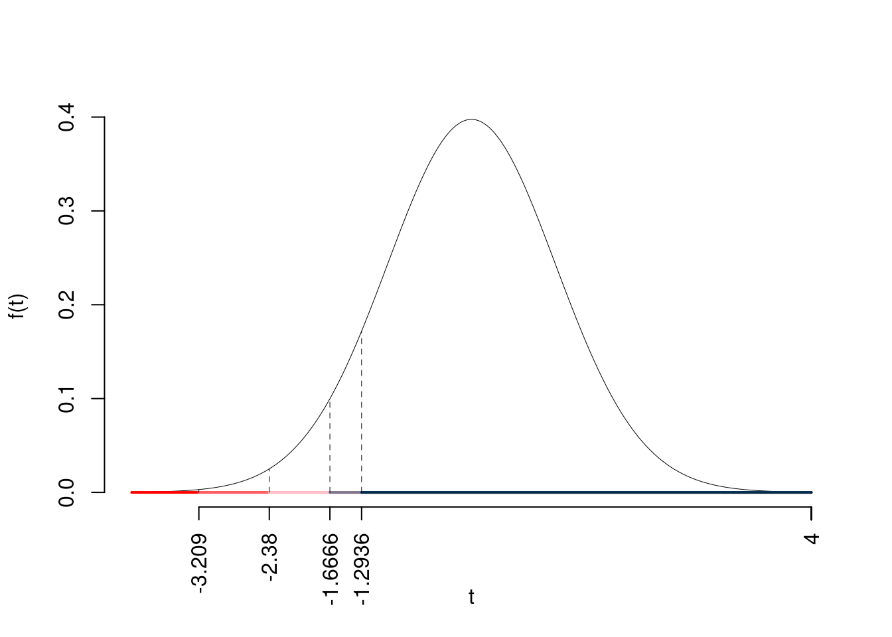
Il \(p_{\text{value}}\) è
\[ p_{\text{value}} = P(T_{73-2}<-9.25)=4e-14 \]
Attenzione il calcolo del \(p_\text{value}\) con la \(T\) è puramente illustrativo e non può essere riprodotto senza una calcolatrice statistica adeguata.\[ 0 < p_\text{value}= 4e-14 \leq 0.001 \]
Esercizio 6
Sono stati analizzati 15 comuni della provincia di Bologna e su ogni comune è stato rilevato il PIL pro capite del comune \(X\), espresso in decine di migliaia di euro e un valore di percezione di qualità della vita \(Y\) (espresso su opportuna scala).
Qui di seguito le statistiche bivariate
\[\begin{align*} \sum_{i=1}^n x_i &= 29.3 &\sum_{i=1}^n x_i^2 &= 74.51 &\sum_{i=1}^n x_i y_i &= 242.81\\ \sum_{i=1}^n y_i &= 110.8 & \sum_{i=1}^n y_i^2 &= 866.02 & \end{align*}\]
6.a (Punti 14/106 \(\rightarrow\) 4.09/31) Stimare la previsione per \(x=1.6\) nel modello di regressione dove \(Y\) viene spiegata da \(X\).
\[\begin{eqnarray*} \bar x &=&\frac 1 n\sum_{i=1}^n x_i = \frac {1}{ 15 } 29.3 = 1.95 \\ \bar y &=&\frac 1 n\sum_{i=1}^n y_i = \frac {1}{ 15 } 110.8 = 7.39 \\ \hat\sigma_X^2&=&\frac 1 n\sum_{i=1}^n x_i^2-\bar x^2=\frac {1}{ 15 } 74.5 - 1.9533 ^2= 1.15 \\ \hat\sigma_Y^2&=&\frac 1 n\sum_{i=1}^n y_i^2-\bar y^2=\frac {1}{ 15 } 866 - 7.3867 ^2= 3.17 \\ \text{cov}(X,Y)&=&\frac 1 n\sum_{i=1}^n x_i~y_i-\bar x\bar y=\frac {1}{ 15 } 243 - 1.9533 \cdot 7.3867 = 1.76 \\ \hat\beta_1 &=& \frac{\text{cov}(X,Y)}{\hat\sigma_X^2} \\ &=& \frac{ 1.76 }{ 1.15 } = 1.53 \\ \hat\beta_0 &=& \bar y - \hat\beta_1 \bar x\\ &=& 7.39 - 1.5269 \times 1.9533 = 4.4 \end{eqnarray*}\]\[\hat y_{X= 1.6 }=\hat\beta_0+\hat\beta_1 x= 4.4 + 1.5269 \times 1.6 = 6.85 \]
6.b (Punti 3/106 \(\rightarrow\) 0.88/31) Calcolare numericamente \(RSS\): \[ RSS=\sum_{i=1}^n \hat\epsilon_i^2 \]
\[RSS=n(1-r^2)\hat\sigma_Y^2=7.297\]
6.c (Punti 3/106 \(\rightarrow\) 0.88/31) Gli stimatori \(\hat\beta_0\) e \(\hat\beta_1\) sono consistenti? Perché?
6.d (Punti 2/106 \(\rightarrow\) 0.58/31) Se in un modello di regressione con 11 dati, il residuo studentizzato del dato \(i\) è \(\tilde \epsilon_i=1.23\), cosa possiamo concludere?
6.e (Punti 2/106 \(\rightarrow\) 0.58/31) Sia \(\hat\beta_1\) lo stimatore dei minimi quadrati per \(\beta_1\). Scrivere il suo Standard Error teorico.
Prova di Statistica 2022/07/27-3
r
Esercizio 1
Su un campione di \(220\) imprese della provincia di Milano è stato rilevato il bilancio, espresso in migliaia di euro, del 2020. Qui di seguito i dati raccolti in classi e le densità di frequenza percentuale.
| \([\text{x}_j,\) | \(\text{x}_{j+1})\) | \(h_j\) |
|---|---|---|
| -10 | -5 | 0.909 |
| -5 | 0 | 3.455 |
| 0 | 2 | 26.136 |
| 2 | 4 | 8.636 |
| 4 | 6 | 4.318 |
1.a (Punti 14/101 \(\rightarrow\) 4.3/31) Calcolare il valore approssimato della mediana.
| \([\text{x}_j,\) | \(\text{x}_{j+1})\) | \(n_j\) | \(f_j\) | \(b_j\) | \(h_j\) | \(F_j\) |
|---|---|---|---|---|---|---|
| -10 | -5 | 10 | 0.045 | 5 | 0.909 | 0.045 |
| -5 | 0 | 38 | 0.173 | 5 | 3.455 | 0.218 |
| 0 | 2 | 115 | 0.523 | 2 | 26.136 | 0.741 |
| 2 | 4 | 38 | 0.173 | 2 | 8.636 | 0.914 |
| 4 | 6 | 19 | 0.086 | 2 | 4.318 | 1.000 |
| 220 | 1.000 | 16 |
\[\begin{eqnarray*} p &=& 0.5 , \text{essendo }F_{ 3 }= 0.741 > 0.5 \Rightarrow j_{ 0.5 }= 3 \\ x_{ 0.5 } &=& x_{\text{inf}; 3 } + \frac{ { 0.5 } - F_{ 2 }} {f_{ 3 }} \cdot b_{ 3 } \\ &=& 0 + \frac {{ 0.5 } - 0.218 } { 0.523 } \cdot 2 \\ &=& 1.08 \end{eqnarray*}\]
1.b (Punti 3/101 \(\rightarrow\) 0.92/31) Quante aziende hanno un bilancio compreso tra \(-1\) e il 75-esimo percentile?
\[\begin{eqnarray*} F(x_{0.75}) &=& 0.75\\ F(-1) &=& f_1+4h_2/100\\ &=& 0.045+4\times 3.455/100\\ &=& 0.184\\ \%(-1<X<x_{0.75}) &=& (F(x_{0.75})-F(x_{-1}))\times 100\\ &=& (0.566)\times 100 \%\\ \#(-1<X<x_{0.75}) &=& n\%(-1<X<x_{0.75})/100 \\ &=& 124.6 \end{eqnarray*}\]
\[ \#(-1<X<x_{0.75})=n\%(-1<X<x_{0.75})/100=n/100(75-F(-1)) \]
1.c (Punti 2/101 \(\rightarrow\) 0.61/31) Che relazione dobbiamo attenderci tra media, mediana e moda?
1.d (Punti 2/101 \(\rightarrow\) 0.61/31) Sapendo che \(\sigma_X=2.82\) la Standard Deviation di \(X\) e posto \(y_i=-x_i, \forall i\), quanto varrà \(\sigma_Y\), la standard deviation dei dati così trasformati?
Esercizio 2
Una moneta perfetta viene lanciata 2 volte, se esce almeno 1 volta testa si estrae da un’urna che contiene un biglietto vincente ed uno perdente, altrimenti si estrae da un’urna che contiene due biglietti vincenti e tre perdenti.
2.a (Punti 14/101 \(\rightarrow\) 4.3/31) Qual è la probabilità di vincere?
Sia \(X\sim\text{Binom}(1/2)\) \[P(E)=P(X\ge 1)=1-P(X=0)=1-\frac 14=\frac 34\]
\[\begin{eqnarray*} P(Vincere) &=& P(E)P(Vincere|E)+P(\bar E)P(Vincere|\bar E)\\ &=& \frac 34\frac 12 + \frac 14 \frac 23\\ &=& 0.542 \end{eqnarray*}\]
2.b (Punti 3/101 \(\rightarrow\) 0.92/31) Si ripete il gioco di sopra finché non si vince tre volte. Qual è la probabilità di finire alla quinta giocata?
\[\begin{eqnarray*} P(\text{Finire alla quarta}) &=& P(\text{Vincere 2 partite su 3}\cap\text{vincere alla quarta})\\ &=& \left(\binom{3}{2}0.542^2(1-0.542)^1\right)\times 0.542\\ &=& 0.403\times 0.542\\ &=& 0.219 \end{eqnarray*}\]
2.c (Punti 2/101 \(\rightarrow\) 0.61/31) Se \(X\) è una VC con supporto {1,2,3} e \(Y\) è una VC con supporto {1,3,5}. Qual è il supporto di \(X\times Y\)?
\[S_{X-Y}=1, 2, 3, 5, 6, 9, 10, 15\]
Esercizio 3
3.a (Punti 14/101 \(\rightarrow\) 4.3/31) Il supermercato S accoglie, in media ogni giorno, 3.242 mila persone, con una deviazione standard di 0.5 mila persone. Dopo 60 giorni di apertura, qual è la probabilità che il totale dei visitatori sia maggiore di 225 mila persone?
Teorema del Limite Centrale (somma VC qualunque)
Siano \(X_1\),…,\(X_n\), \(n=60\) VC IID, tc \(E(X_i)=\mu=3.24\) e \(V(X_i)=\sigma^2=0.25,\forall i\), posto: \[ S_n = X_1 + ... + X_n \] allora:\[\begin{eqnarray*} S_n & \mathop{\sim}\limits_{a}& N(n\mu,n\sigma^2) \\ &\sim & N(60\cdot3.24,60\cdot0.25) \\ &\sim & N(195,15) \end{eqnarray*}\]\[\begin{eqnarray*} P( S_n > 225 ) &=& P\left( \frac { S_n - n\mu }{ \sqrt{n\sigma^2} } > \frac { 225 - 195 }{\sqrt{ 15 }} \right) \\ &=& P\left( Z > 7.87 \right) \\ &=& 1-P(Z< 7.87 )\\ &=& 1-\Phi( 7.87 ) \\ &=& 0 \end{eqnarray*}\]
Esercizio 4
4.a (Punti 3/101 \(\rightarrow\) 0.92/31) Sia \(h\) uno stimatore per \(\theta\), tale che
\[ MSE(h) = \theta+\frac{\theta}{n^2} \]
Lo stimatore \(h\) è consistente?
4.b (Punti 3/101 \(\rightarrow\) 0.92/31) Sia \(\hat\theta\) lo stimatore di massima verosimiglianza per \(\theta\). Qual è la distribuzione asintotica di \(\hat\theta\)?
4.c (Punti 3/101 \(\rightarrow\) 0.92/31) Un intervallo di confidenza per \(\theta\) al 90% è più ampio o meno ampio di uno al 95%? Perché?
4.d (Punti 3/101 \(\rightarrow\) 0.92/31) Se in un test statistico bilaterale che utilizza la statistica test z , risulta \(z_\text{obs}=14\), il \(p_\text{value}\) sarà maggiore o minore di 0.01? Perché?
Esercizio 5
Su un campione di \(n_R=75\) tassisti romani è stato chiesto se siano favorevoli o meno all’introduzione del decreto di liberalizzazione del trasporto. Lo studio ha riportato che 15 persone su 75 (l’20% del campione) è favorevole.
5.a (Punti 3/101 \(\rightarrow\) 0.92/31) Costruire un intervallo di confidenza la 95% per \(\pi\) la quota di tassisti favorevoli al decreto liberalizzazione
\[\begin{eqnarray*} \left[~~0.2\pm z_{0.025}\sqrt{\frac{0.2\times 0.8}{75}}~~\right] &=& \left[~~0.2\pm 1.96\times0.046~~\right]\\ &=&\left[~~0.109; 0.291~~\right] \end{eqnarray*}\]
5.b (Punti 11/101 \(\rightarrow\) 3.38/31) La stessa domanda è stata posta ad un secondo campione di \(n_M=95\) tassisti milanesi. Lo studio ha riportato che 32 persone su 95 (l’20% del campione) è favorevole.
Testare l’ipotesi la quota di tassisti favorevoli sia uguale tra le due città contro l’alternativa che i tassisti milanesi siano maggiormente favorevoli.
Test \(Z\) per due proporzioni
\(\fbox{A}\) FORMULAZIONE DELLE IPOTESI
\[\begin{cases} H_0: \pi_\text{$R$} = \pi_\text{$M$} \\ H_1: \pi_\text{$R$} < \pi_\text{$M$} \end{cases}\]
\(\fbox{B}\) SCELTA E CALCOLO STATISTICA-TEST, \(Z\)
\[\hat\pi_\text{ $R$ }=\frac{s_\text{ $R$ }}{n_\text{ $R$ }}=\frac{ 15 }{ 75 }= 0.2 \qquad \hat\pi_\text{ $M$ }=\frac{s_\text{ $M$ }}{n_\text{ $M$ }}=\frac{ 32 }{ 95 }= 0.337 \]Calcoliamo la proporzione comune sotto \(H_0\) \[ \pi_C=\frac{s_\text{ $R$ }+s_\text{ $M$ }}{n_\text{ $R$ }+n_\text{ $M$ }}= \frac{ 47 }{ 170 }= 0.276 \]\[\begin{eqnarray*} \frac{\hat\pi_\text{ $R$ } - \hat\pi_\text{ $M$ }} {\sqrt{\frac {\pi_C(1-\pi_C)}{n_\text{ $R$ }}+\frac {\pi_C(1-\pi_C)}{n_\text{ $M$ }}}}&\sim&N(0,1)\\ z_{\text{obs}} &=& \frac{ ( 0.2 - 0.337 )} {\sqrt{\frac{ 0.276 (1- 0.276 )}{ 75 }+\frac{ 0.276 (1- 0.276 )}{ 95 }}} = -1.98 \, . \end{eqnarray*}\]
\(\fbox{C}\) CONCLUSIONE
Il \(p_{\text{value}}\) è
\[ p_{\text{value}} = P(Z<-1.98)=0.023808 \]
\[ 0.01 < p_\text{value}= 0.023808 \leq 0.05 \]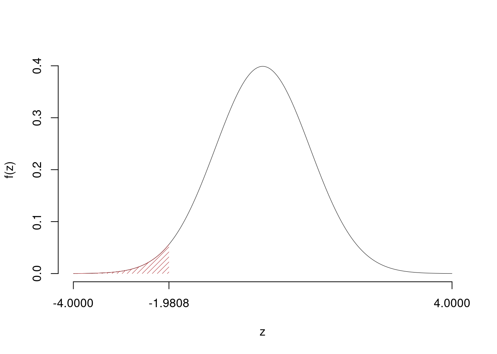
Rifiuto \(H_0\) al 5%,
\(0.01<p_\text{value}<0.05\), significativo \(\fbox{*}\).
Esercizio 6
Sono stati analizzati 15 comuni della provincia di Bologna e su ogni comune è stato rilevato il PIL pro capite del comune \(X\), espresso in decine di migliaia di euro e un valore di percezione di qualità della vita \(Y\) (espresso su opportuna scala).
Qui di seguito le statistiche bivariate
\[\begin{align} \sum_{i=1}^n x_i &= 28.3 &\sum_{i=1}^n x_i^2 &= 71.19 &\sum_{i=1}^n x_i y_i &= 253.01\\ \sum_{i=1}^n y_i &= 122.2 & \sum_{i=1}^n y_i^2 &= 1042.2 & \end{align}\]
6.a (Punti 14/101 \(\rightarrow\) 4.3/31) Questi sono alcuni dei dati osservati
| \(x_i\) | 2.5 | 2.1 | 0.3 | 3.0 |
| \(y_i\) | 6.7 | 9.3 | 6.0 | 9.5 |
Calcolare il residuo per \(x=2.1\) nel modello di regressione dove \(Y\) è spiegato da \(X\).
\[\begin{eqnarray*} \bar x &=&\frac 1 n\sum_{i=1}^n x_i = \frac {1}{ 15 } 28.3 = 1.89 \\ \bar y &=&\frac 1 n\sum_{i=1}^n y_i = \frac {1}{ 15 } 122.2 = 8.15 \\ \hat\sigma_X^2&=&\frac 1 n\sum_{i=1}^n x_i^2-\bar x^2=\frac {1}{ 15 } 71.2 - 1.8867 ^2= 1.19 \\ \hat\sigma_Y^2&=&\frac 1 n\sum_{i=1}^n y_i^2-\bar y^2=\frac {1}{ 15 } 1042 - 8.1467 ^2= 3.11 \\ \text{cov}(X,Y)&=&\frac 1 n\sum_{i=1}^n x_i~y_i-\bar x\bar y=\frac {1}{ 15 } 253 - 1.8867 \cdot 8.1467 = 1.5 \\ \hat\beta_1 &=& \frac{\text{cov}(X,Y)}{\hat\sigma_X^2} \\ &=& \frac{ 1.5 }{ 1.19 } = 1.26 \\ \hat\beta_0 &=& \bar y - \hat\beta_1 \bar x\\ &=& 8.15 - 1.2619 \times 1.8867 = 5.77 \end{eqnarray*}\]\[\begin{eqnarray*} \hat y_i &=&\hat\beta_0+\hat\beta_1 x_i=\\ &=& 5.77 + 1.2619 \times 2.1 = 8.42 \\ \hat \varepsilon_i &=& y_i-\hat y_i\\ &=& 9.3 - 8.42 = 0.884 \end{eqnarray*}\]
6.b (Punti 3/101 \(\rightarrow\) 0.92/31) Calcolare la percentuale di varianza di \(Y\) spiegata dal modello.
\[\begin{eqnarray*} r&=&\frac{\text{cov}(X,Y)}{\sigma_X\sigma_Y}=\frac{ 1.5 }{ 1.09 \times 1.76 }= 0.779 \\r^2&=& 0.607 < 0.75 \end{eqnarray*}\] Il modello non si adatta bene ai dati.
6.c (Punti 2/101 \(\rightarrow\) 0.61/31) Se in un modello di regressione con 15 dati, il residuo studentizzato del dato \(i\) è \(\tilde \epsilon_i=12.3\), cosa possiamo concludere?
6.d (Punti 2/101 \(\rightarrow\) 0.61/31) Sia \(\hat\beta_0\) lo stimatore dei minimi quadrati per \(\beta_0\). Scrivere il suo Standard Error stimato.